## Popularity on Variations of Multidimensional Roommate Games <section> <div style="height:100%; width:100%"> <h3 style="text-align: center;vertical-align: bottom;">Steven Ge</h3> <h4 style="text-align: center;vertical-align: bottom;">Supervisor: Toshiya Itoh</h4> <div style="text-align: center; vertical-align: bottom;" id="coverpage-bottom">Institute of Science Tokyo<br>Department of Mathematical and Computing Science</div> </div> </section> --- ### Table of Contents <section> - Preliminaries - Multidimensional Roommates Problem (MRP) - Equilibrium Concepts <!-- - Core Stability --> <!-- - Popularity --> - Complexity of Popularity - Variations of Multidimensional Roommates Problem - My Research - Roommate Diversity Problem <!-- - Room size 2 --> <!-- - Strict Popularity --> <!-- - Our Result Summary --> - 3D-Euclidean Stable Roommates <!-- - Strict Popularity --> - Future Work - Roommate Diversity Problem - 3D-Euclidean Stable Roommates </section> --- <section style="height: 100%;position: relative;"> <h1 style="position: absolute; top: 50%; left: 50%;transform: translate(-50%, -50%); width: 100%;">Preliminaries</h1> </section> --- ### Multidimensional Roommates Problem (MRP)$^{\text{[1]}}$ <!-- graph 0 --> <section class="graph-section" id="graph1_mrp" data-transition="fade-out"> <h5>Andecdote</h5> <div style="width: 100%;"> <div style="width: 49%; float: left;font-size: 0.6em;"> <ul> <li data-fragment-index="0" class="fragment">Dormitory</br> <ul> <li data-fragment-index="1" class="fragment">Students</li> </ul> </li> <li data-fragment-index="3" class="fragment">Rooms require exactly $s$ students <ul> <li data-fragment-index="4" class="fragment">$s=3$</li> </ul> </li> <li data-fragment-index="6" class="fragment">Each student $s$ ranks the others in order of preference $\succsim_s$<br> <ul> <li data-fragment-index="7" class="fragment">E.g. $\dots \succsim_{\color{red}a\color{black}} \{\color{red}a\color{black},b,c\} \dots \succ_{\color{red}a\color{black}} \dots \{h,e,\color{red}a\color{black}\}\succsim_{\color{red}a\color{black}} \dots$</li> </ul> </li> </ul> </div> <div data-fragment-index="2" style="margin-left: 50%;width:50%" id="graph1-mrp" class="fragment graph"></div> <div data-fragment-index="5" id="graph1-mrp-1" class="fragment"></div> <div data-fragment-index="8" id="graph1-mrp-2" class="fragment"></div> <div data-fragment-index="9" id="graph1-mrp-3" class="fragment"></div> </div> </section> <section class="graph-section" id="graph2_mrp" data-transition="fade-in"> <h5>Problem Statement</h5> <div style="width: 100%;"> <div style="width: 49%; float: left;font-size: 0.6em;"> <ul> <li data-fragment-index="0" class="fragment">Set of agents $N$</li> <li data-fragment-index="1" class="fragment">Partition the agents into rooms</li> <ul> <li data-fragment-index="2" class="fragment">Outcome = Partitioning of agents</li> </ul> <li data-fragment-index="3" class="fragment">Room size $s$ <ul> <li data-fragment-index="4" class="fragment">$s=3$</li> </ul> </li> <li data-fragment-index="5" class="fragment">Each student ranks the others in order of preference <ul> <li data-fragment-index="6" class="fragment">$(\succsim_a)_{a\in N}$</li> </ul> </li> <li data-fragment-index="7" class="fragment"> Game $G = (N, s, (\succsim_a)_{a\in N})$ </li> </ul> </div> <div style="margin-left: 50%;width:50%" id="graph2-mrp" class="graph"></div> </div> </section> --- ### Equilibrium Concepts #### Core Stability$^{\text{[2]}}$ <!-- -----------------------------------graph 3------------------------------------- --> <section class="graph-section" id="graph1_corestab"> <!-- <h5>Definition</h5> --> <div style="width: 100%;"> <div style="width: 49%; float: left;font-size: 0.65em;"> <ul> <li data-fragment-index="0" class="fragment">Outcome</br> <ul> <li data-fragment-index="1" class="fragment">$\pi$</li> </ul> </li> <li data-fragment-index="2" class="fragment">Blocking Room $R$ <ul> <li data-fragment-index="3" class="fragment">$\dots \succsim_{\color{red}k\color{black}} \{c,g,\color{red}k\color{black}\} \dots \succ_{\color{red}k\color{black}} \dots \{\color{red}k\color{black},j,i\}\succsim_{\color{red}k\color{black}} \dots$</li> <li data-fragment-index="4" class="fragment">$\dots \succsim_{\color{red}g\color{black}} \{c,\color{red}g\color{black},k\} \dots \succ_{\color{red}g\color{black}} \dots \{\color{red}g\color{black},h,l\} \succsim_{\color{red}g\color{black}} \dots$</li> <li data-fragment-index="5" class="fragment">$\dots \succsim_{\color{red}c\color{black}} \{\color{red}c\color{black},g,k\} \dots \succ_{\color{red}c\color{black}} \dots \{a,b,\color{red}c\color{black}\} \succsim_{\color{red}c\color{black}} \dots$</li> </ul> </li> <li data-fragment-index="8" class="fragment">No blocking room $R$<span data-fragment-index="9" class="fragment">$\iff$</span><span data-fragment-index="10" class="fragment">$\pi$ is core stable</span></li> <li data-fragment-index="12" class="fragment">Fair?</li> </ul> </div> <div style="margin-left: 50%;width:50%" id="graph1-corestab" class="graph"></div> <div data-fragment-index="6" id="graph1-corestab-1" class="fragment"></div> <div data-fragment-index="7" id="graph1-corestab-2" class="fragment"></div> <div data-fragment-index="11" id="graph1-corestab-3" class="fragment"></div> </div> </section> --- ### Equilibrium Concepts #### Popularity$^{\text{[3]}}$ <!-- -----------------------------------graph 3------------------------------------- --> <section class="graph-section" id="graph3"> <!-- <h5>Definition</h5> --> <div style="width: 100%;"> <div style="width: 49%; float: left;font-size: 0.65em;"> <ul> <li data-fragment-index="0" class="fragment">Outcomes</br> <ul> <li data-fragment-index="1" class="fragment">$\pi$</li> <li data-fragment-index="5" class="fragment">$\pi'$</li> </ul> </li> <li data-fragment-index="13" class="fragment">$\pi$ is more popular than $\pi'$ <ul> <li>(Strictly) More $\vee$ than $\wedge$</li> </ul> </li> </ul> <p></p> <br> <br> <ul> <li data-fragment-index="14" class="fragment">$\pi$ is popular <ul> <li data-fragment-index="15" class="fragment">No other outcome $\pi'$ is more popular than $\pi$</li> </ul> </li> <p></p> <li data-fragment-index="16" class="fragment">$\pi$ is strictly popular <ul> <li data-fragment-index="17" class="fragment">$\pi$ is more popular than any other outcome $\pi'$</li> </ul> </li> <p></p> <li data-fragment-index="19" class="fragment">$p$ is mixed popular <ul> <li data-fragment-index="20" class="fragment">$p$ is a probability distribution over all possible outcomes $\Pi$</li> <li data-fragment-index="21" class="fragment">$p$ is expected to be more popular than any other probability distribution $q$ <ul data-fragment-index="21" class="fragment"> <li>$E_{p,q}[\Pi] \geq E_{q,p}[\Pi]$</li> </ul> </li> </ul> </li> </ul> </div> <div data-fragment-index="2" style="margin-left: 50%;width:50%" id="graph3-cy" class="fragment graph"></div> <div data-fragment-index="3" id="graph32-cy" class="fragment"></div> <div data-fragment-index="4" id="graph33-cy" class="fragment"></div> <div data-fragment-index="6" id="graph34-cy" class="fragment"></div> <div data-fragment-index="7" id="graph35-cy" class="fragment"></div> <div data-fragment-index="8" id="graph36-cy" class="fragment"></div> <div data-fragment-index="9" id="graph37-cy" class="fragment"></div> <div data-fragment-index="10" id="graph38-cy" class="fragment"></div> <div data-fragment-index="11" id="graph39-cy" class="fragment"></div> <div data-fragment-index="12" id="graph310-cy" class="fragment"></div> </div> </section> --- ### Equilibrium Concepts #### others <section> <div style="width: 100%;"> <ul> <li data-fragment-index="0" class="fragment">Exchange stability <ul> <li data-fragment-index="1" class="fragment">No pair of agents would prefer to exchange their coalitions over staying in their assigned coalition</li> </ul> </li> <li data-fragment-index="2" class="fragment">Envy-freeness <ul> <li data-fragment-index="3" class="fragment">No agent wants to take the place of another agent</li> </ul> </li> <li data-fragment-index="4" class="fragment">Pareto optimality <ul> <li data-fragment-index="5" class="fragment">No other partitioning of agents exists such that none of the agents are worse off and some of the agents are better off</li> </ul> </li> </ul> </div> </section> --- ### Complexity$^{\text{[4,5,6]}}$ <!-- -----------------------------------graph 3------------------------------------- --> <section> <!-- <h5>Definition</h5> --> <div style="width: 100%;"> <table data-fragment-index="0" class="fragment"> <tbody> <tr> <td></td> <td>Multidimensional Stable Roommates <br>($s \geq 3$)</td> <td>Stable Roommates <br>($s=2$)</td> </tr> <tr> <td>Core Stability</td> <td data-fragment-index="1" class="fragment"><span style="color:red">NP-complete</span>$^{[14]}$</td> <td data-fragment-index="3" class="fragment"><span style="color:green">P</span>$^{[13]}$</td> </tr> <tr> <td>Popularity</td> <td data-fragment-index="2" class="fragment"><span style="color:red">NP-hard</span>$^{[4,5,6]}$</td> <td data-fragment-index="4" class="fragment"><span style="color:red">NP-hard</span>$^{[4,5,6]}$</td> </tr> </tbody> </table> </div> </section> --- ### Variations of Multidimensional Roommates Problem <!-- -----------------------------------graph 3------------------------------------- --> <section data-transition="fade-out"> <h5 data-fragment-index="0" class="fragment">Restrict preferences and rooms</h5> <div style="width:40%; float:left"> <ul> <li data-fragment-index="3" class="fragment" style="font-size:0.8em">Hedonic Games</li> </ul> </div> <div style="width:60%; margin-left:40%"> </div> </section> <section data-transition="fade"> <h5>Restrict preferences and rooms</h5> <div style="width:40%; float:left"> <ul> <li style="font-size:0.8em">Hedonic Games</li> <ul> <li data-fragment-index="1" class="fragment" style="font-size:0.8em"><span style="color:red">Multidimensional Stable Roommates Problem</span><br> <span data-fragment-index="2" class="fragment" style="font-size:0.8em">All rooms must have the same size</span> </li> </ul> </ul> </div> <div style="width:60%; margin-left:40%"> </div> </section> <section data-transition="fade"> <h5>Restrict preferences and rooms</h5> <div style="width:40%; float:left"> <ul> <li style="font-size:0.8em">Hedonic Games</li> <ul> <li style="font-size:0.8em"><span style="color:red">Multidimensional Stable Roommates Problem</span><br> <span style="font-size:0.8em">All rooms must have the same size</span> <ul> <li data-fragment-index="1" class="fragment" style="font-size:0.8em;"><span style="color:blue">Stable Roommates Problem</span><br> <span data-fragment-index="2" class="fragment" style="font-size:0.8em">Each room must contain exactly 2 agents</span> </li> </ul> </li> </ul> </ul> </div> <div style="width:60%; margin-left:40%"> </div> </section> <section data-transition="fade"> <h5>Restrict preferences and rooms</h5> <div style="width:40%; float:left"> <ul> <li style="font-size:0.8em">Hedonic Games</li> <ul> <li style="font-size:0.8em"><span style="color:red">Multidimensional Stable Roommates Problem</span><br> <span style="font-size:0.8em">All rooms must have the same size</span> <ul> <li style="font-size:0.8em"><span style="color:blue">Stable Roommates Problem</span><br> <span style="font-size:0.8em">Each room must contain exactly 2 agents</span> <ul> <li data-fragment-index="1" class="fragment" style="font-size:0.8em"><span style="color:rgb(0,153,0)">Stable Marriage Problem</span><br> <span data-fragment-index="2" class="fragment" style="font-size:0.8em">Each room must contain exactly 1 woman and 1 man</span> </li> </ul> </li> </ul> </li> </ul> </ul> </div> <div style="width:60%; margin-left:40%"> </div> </section> <section data-transition="fade"> <h5>Restrict preferences and rooms</h5> <div style="width:40%; float:left"> <ul> <li style="font-size:0.8em">Hedonic Games</li> <ul> <li style="font-size:0.8em"><span style="color:red">Multidimensional Stable Roommates Problem</span><br> <span style="font-size:0.8em">All rooms must have the same size</span> <ul> <li style="font-size:0.8em"><span style="color:blue">Stable Roommates Problem</span><br> <span style="font-size:0.8em">Each room must contain exactly 2 agents</span> <ul> <li style="font-size:0.8em"><span style="color:rgb(0,153,0)">Stable Marriage Problem</span><br> <span style="font-size:0.8em">Each room must contain exactly 1 woman and 1 man</span> </li> </ul> </li> <li data-fragment-index="1" class="fragment" style="font-size:0.8em"><span style="color:rgb(126,0,88)">Roommate Diversity Problem</span><br> <span data-fragment-index="2" class="fragment" style="font-size:0.8em">Each agent has diversity preferences</span> </li> </ul> </li> </ul> </ul> </div> <div style="width:60%; margin-left:40%"> <p>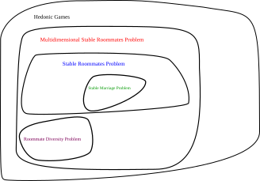</p> </div> </section> <section data-transition="fade-in"> <h5>Restrict preferences and rooms</h5> <div style="width:40%; float:left"> <ul> <li style="font-size:0.8em">Hedonic Games</li> <ul> <li style="font-size:0.8em"><span style="color:red">Multidimensional Stable Roommates Problem</span><br> <span style="font-size:0.8em">All rooms must have the same size</span> <ul> <li style="font-size:0.8em"><span style="color:blue">Stable Roommates Problem</span><br> <span style="font-size:0.8em">Each room must contain exactly 2 agents</span> <ul> <li style="font-size:0.8em"><span style="color:rgb(0,153,0)">Stable Marriage Problem</span><br> <span style="font-size:0.8em">Each room must contain exactly 1 woman and 1 man</span> </li> </ul> </li> <li style="font-size:0.8em"><span style="color:rgb(126,0,88)">Roommate Diversity Problem</span><br> <span style="font-size:0.8em">Each agent has diversity preferences</span> </li> <li data-fragment-index="1" class="fragment" style="font-size:0.8em"><span style="color:rgb(91,53,0)">3D-Euclidean Stable Roommates</span><br> <span data-fragment-index="2" class="fragment" style="font-size:0.8em">Each agent has distance preferences</span> </li> </ul> </li> </ul> </ul> </div> <div style="width:60%; margin-left:40%"> <p>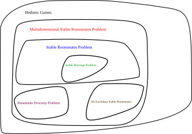</p> </div> </section> <section> <div style="width: 100%;"> <h5>Roommate Diversity Problem$^{[7]}$</h5> <div data-fragment-index="2" class="fragment" style="font-size:0.7em"> <table class="ta1" cellspacing="0" cellpadding="0" border="0"> <tbody> <tr class="ro1"> <td style="text-align:left;width:20%" class="Default"><b>Equilibrium Concept</b></td> <td style="text-align:left;width:20%" class="ce4"><p><b>Complexity Class, Room Size = 2</b></p></td> <td style="text-align:left;width:20%" class="ce4"><p><b>Complexity Class, Room Size > 2</b></p></td> <td style="text-align:left;width:20%" class="ce4"><p><b>Parameterized Complexity Class (parameter: room size)</b></p></td> </tr> <tr style="" class="ro1"> <td style="text-align:left;" class="ce1"> <p>Core Stability</p> </td> <td style="text-align:left;color:green" class="ce2"> <p>P</p> </td> <td style="text-align:left;color:red" class="ce2"> <p>NP-Complete$^{**}$</p> </td> <td style="text-align:left;color:green" class="ce2"> <p>FPT</p> </td> </tr> <tr style="" class="ro1"> <td style="text-align:left;" class="ce2"> <p>Exchange Stability</p> </td> <td style="text-align:left;color:green" class="ce2"> <p>p</p> </td> <td style="text-align:left;color:red" class="ce2"> <p>NP-complete</p> </td> <td style="text-align:left;color:green" class="ce2"> <p>FPT</p> </td> </tr> <tr style="" class="ro1"> <td style="text-align:left;" class="ce2"> <p>Pareto Optimality</p> </td> <td style="text-align:left;color:green" class="ce2"> <p>P</p> </td> <td style="text-align:left;color:green" class="ce2"> <p>P$^*$</p> </td> <td style="text-align:left;color:grey" class="ce2"> <p>-</p> </td> </tr> <tr style="" class="ro1"> <td style="text-align:left;" class="ce2"> <p>Envy-Free</p> </td> <td style="text-align:left;color:green" class="ce2"> <p>?</p> </td> <td style="text-align:left;color:red" class="ce2"> <p>NP-complete</p> </td> <td style="text-align:left;color:green" class="ce2"> <p>FPT</p> </td> </tr> </tbody> </table> <p>$^*$Search problem is <span style="color:red">NP-Hard</span> for Room Size > 2.</p> <p>$^{**}$<span style="color:green">P</span> if preferences are dichotomous.</p></br> </div> </div> </section> <section> <div style="width: 100%;"> <h5>3D-Euclidean Stable Roommates Problem$^{[8]}$</h5> <table data-fragment-index="1" class="fragment"> <tbody> <tr> <td></td> <td><b>2D</b>-Euclidean Space<br />(Room size = 2)</td> <td><b>2D</b>-Euclidean Space<br />(Room size > 2)</td> </tr> <tr> <td>Core Stability</td> <td style="color:green" data-fragment-index="2" class="fragment">P</td> <td style="color:red" data-fragment-index="3" class="fragment">NP-Complete</td> </tr> </tbody> </table> </div> </section> --- <section style="height: 100%;position: relative;"> <h1 style="position: absolute; top: 50%; left: 50%;transform: translate(-50%, -50%); width: 100%;">My Research</h1> </section> --- ### Roommate Diversity Problem$^{\text{[7,9]}}$ <section> <div style="height:100%; width:100%"> <p>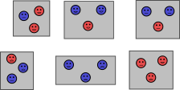</p> </section> <!-- ----------------------------------roommate diversity problem description---------------------------- --> <!-- graph 1 --> <section class="graph-section" id="graph1" data-transition="fade-out"> <h5>Andecdote</h5> <div style="width: 100%;"> <div style="width: 49%; float: left;font-size: 0.65em;"> <ul> <li data-fragment-index="0" class="fragment">International class</br> <ul> <li data-fragment-index="2" id="redstud" class="fragment">Japanese students</li> <li data-fragment-index="3" id="bluestud" class="fragment">International students</li> </ul> </li> <li data-fragment-index="6" class="fragment">Groups of constant size $s$ <ul> <li data-fragment-index="7" class="fragment">$s=3$</li> </ul> </li> <li data-fragment-index="9" class="fragment">Preference only depends on $\frac{\#\text{Japanese students in group}}{s}$ <ul> <li data-fragment-index="11" class="fragment"><span style="color:red">$k$</span> does not speak nor wants to practice English <ul> <li data-fragment-index="12" class="fragment">$1 \succ$<span style="color:red">$_k$</span> $\frac{2}{3}$ $\succ$<span style="color:red">$_k$</span> $\frac{1}{3}$</li> </ul> </li> <li data-fragment-index="15" class="fragment"><span style="color:blue">$a$</span> does not speak, but wants to practice Japanese <ul> <li data-fragment-index="16" class="fragment">$\frac{1}{3}$ $\succ$<span style="color:blue">$_a$</span> $\frac{2}{3}$ $\sim$<span style="color:blue">$_a$</span> $0$</li> </ul></li> </ul> </li> </ul> </div> <div data-fragment-index="1" style="margin-left: 50%;width:50%" id="graph1-cy" class="fragment graph"></div> <div data-fragment-index="4" id="graph12-cy" class="fragment"></div> <div data-fragment-index="5" id="graph13-cy" class="fragment"></div> <div data-fragment-index="8" id="graph14-cy" class="fragment"></div> <div data-fragment-index="10" id="graph15-cy" class="fragment"></div> <div data-fragment-index="13" id="graph16-cy" class="fragment"></div> <div data-fragment-index="14" id="graph17-cy" class="fragment"></div> <div data-fragment-index="17" id="graph18-cy" class="fragment"></div> </div> </section> <section class="graph-section" data-transition="fade" id="graph1_2"> <h5>Problem Statement</h5> <div style="width: 100%;"> <div style="width: 49%; float: left;font-size: 0.65em;"> <ul> <li class="fragment">Agents</br> <ul> <li class="fragment">Set of Red Agents <span style="color:red">$R$</span></li> <li class="fragment">Set of Blue Agents <span style="color:blue">$B$</span></li> </ul> </li> <li class="fragment">Room size $s$ <ul> <li class="fragment">$s=3$</li> </ul> </li> <li class="fragment">Preference only depends on $\frac{\#\text{red agents in room}}{s}$ <ul> <li class="fragment"> $a \in \color{red}{R} \color{black}\cup \color{blue}{B}$ </li> <li class="fragment"> $\succsim_{a}$ Complete transitive weak order over $D = \{\frac{j}{s}| j \in [0,s]\}$ </li> </ul> </li> <li class="fragment">Game $G = ($<span style="color:red">$R$</span>$,$<span style="color:blue">$B$</span>$,s, (\succsim_a)_{a \in }$<span style="color:red">$_R$</span>$_\cup$<span style="color:blue">$_B$</span>$)$</li> </ul> </div> <div style="margin-left: 50%;width:50%" id="graph1-2-cy" class="graph"></div> </div> </section> <section class="graph-section" data-transition="fade-in" id="graph1_3"> <h5>Dichotomous Preferences</h5> <div style="width: 100%;"> <div style="width: 49%; float: left;font-size: 0.65em;"> <ul> <li>Agents</br> <ul> <li>Set of Red Agents <span style="color:red">$R$</span></li> <li>Set of Blue Agents <span style="color:blue">$B$</span></li> </ul> </li> <li>Room size $s$ <ul> <li>$s=3$</li> </ul> </li> <li>Preference only depends on $\frac{\#\text{red agents in room}}{s}$ <ul> <li> $a \in \color{red}{R} \color{black}\cup \color{blue}{B}$ </li> <li> $\succsim_{a}$ Complete transitive weak order over $D = \{\frac{j}{s}| j \in [0,s]\}$ </li> </ul> </li> <li>Game $G = ($<span style="color:red">$R$</span>$,$<span style="color:blue">$B$</span>$,s, (\succsim_a)_{a \in }$<span style="color:red">$_R$</span>$_\cup$<span style="color:blue">$_B$</span>$)$</li> <li class="fragment">Preference of agent $a \in \color{red}{R} \color{black}\cup \color{blue}{B}$ is dichotomous <ul> <li class="fragment"> $D$ can be partitioned into $D_a^+$ and $D_a^-$ <ul> <li class="fragment"> $a$ ''<b>likes</b>'' the fractions in $D_a^+$ equally </li> <li class="fragment"> $a$ ''<b>hates</b>'' the fractions in $D_a^-$ equally </li> <li class="fragment"> E.g. <span class="fragment"><span style="border-width:2px; border-style:solid; border-color:green; padding: 0.2em;">$\frac{1}{3}$ </span>$\succ$<span style="color:blue">$_a$</span> <span style="border-width:2px; border-style:solid; border-color:red; padding: 0.2em;">$\frac{2}{3}$ $\sim$<span style="color:blue">$_a$</span> $0$</span></span> <p></p> <ul> <li class="fragment"><span style="border-width:2px; border-style:solid; border-color:green; padding: 0em;">$D^+_{\color{blue}a}$</span>$=\{\frac{1}{3}\}$</li> <li class="fragment"><span style="border-width:2px; border-style:solid; border-color:red; padding: 0em;">$D^-_{\color{blue}a}$</span>$=\{\frac{2}{3}, 0\}$</li> </ul> </li> </ul> </li> </ul> </li> </ul> </div> <div style="margin-left: 50%;width:50%" id="graph1-3-cy" class="graph"></div> </div> </section> --- ### Room Size 2 <!-- -----------------------------------graph 4------------------------------------- --> <section class="graph-section" id="graph4"> <h5 data-fragment-index="0" class="fragment"><b>Theorem 3.1.2:</b> Popular outcome $\pi$ can be computed in <span style="color: green">polynomial time</span></h5> <div style="width: 100%;"> <div style="width: 49%; float: left;font-size: 0.65em;"> <ul> <li data-fragment-index="1" class="fragment">Game $G = ($<span style="color:red">$R$</span>$,$<span style="color:blue">$B$</span>$,2, (\succsim_a)_{a \in }$<span style="color:red">$_R$</span>$_\cup$<span style="color:blue">$_B$</span>$)$</br> <ul> <li data-fragment-index="2" class="fragment">$s=2$</li> </ul> </li> <li data-fragment-index="7" class="fragment">3 possible preference types <ul> <li data-fragment-index="8" class="fragment">Prefers to be paired with <b>OWN</b> color</li> <li data-fragment-index="9" class="fragment">Prefers to be paired with <b>OTHER</b> color</li> <li data-fragment-index="10" class="fragment"><b>Indifferent</b></li> </ul> </li> <li data-fragment-index="11" class="fragment">Weighted complete graph $G' = (\color{red}R\color{black}\cup\color{blue}B\color{black}, E, w)$ <ul> <!-- <span data-fragment-index="14" class="fragment"> --> <!-- <div style="width: 100%; overflow: hidden;"> --> <li data-fragment-index="14" class="fragment" style="float: left;"> $w(x,y) = \begin{cases} ~\\ ~ \\ ~ \\ \end{cases}$ </li> <div style="display:flow-root"> <span data-fragment-index="16" class="fragment">$\small 2~~~~ \{x,y\} \text{ liked by both } x \mathbf{\text{ AND }} y$</span><br> <span data-fragment-index="17" class="fragment">$\small 1~~~~ \{x,y\} \text{ liked by } x \mathbf{\text{ XOR }} y$</span><br> <span data-fragment-index="18" class="fragment">$\small 0~~~~ \{x,y\} \text{ disliked by both } x \mathbf{\text{ AND }} y$</span> </div><br> <!-- </div> --> <!-- </span> --> <li data-fragment-index="19" class="fragment">E.g. $\{\color{blue}a\color{black},\color{blue}b\color{black}\}$ <ul> <div> <div style="float:left"> <li data-fragment-index="21" class="fragment">$0 \succ_{\color{blue}a} \frac{1}{2}$</li> <li data-fragment-index="22" class="fragment">$0 \prec_{\color{blue}b} \frac{1}{2}$</li> </div> <div data-fragment-index="23" class="fragment" style="display: inline-block; text-align:center"><span style="font-size:2em">$\}$</span>$\Rightarrow w(\color{blue}a\color{black},\color{blue}b\color{black}) = 1$</div> </div> <br> <div> <div style="float:left"> <li data-fragment-index="24" class="fragment">$0 \succ_{\color{blue}a} \frac{1}{2}$</li> <li data-fragment-index="25" class="fragment">$0 \sim_{\color{blue}b} \frac{1}{2}$</li> </div> <div data-fragment-index="26" class="fragment"><span style="font-size:2em">$\}$</span>$\Rightarrow w(\color{blue}a\color{black},\color{blue}b\color{black}) = 2$</div> </div> </ul> </li> </ul> <br> </li> <li style="font-size:0.97em" data-fragment-index="27" class="fragment">Maximum weight perfect matching $M$ of $G'$ is popular! <ul> <li data-fragment-index="28" class="fragment">$M$ can be found in <b style="color:green">polynomial</b> time$^{[10]}$ <span data-fragment-index="29" class="fragment"> $\Box$</span></li> </ul> </li> </ul> </div> <div data-fragment-index="3" style="margin-left: 50%;width:50%" id="graph4-cy" class="fragment graph"></div> <div data-fragment-index="12" id="graph42-cy" class="fragment"></div> <!-- <div data-fragment-index="13" id="graph43-cy" class="fragment"></div> --> <div data-fragment-index="20" id="graph44-cy" class="fragment"></div> </div> </section> <section class="graph-section" id="graph4_2"> <h5><b>Theorem 3.1.2:</b> Popular outcome $\pi$ can be computed in <span style="color: green">polynomial time</span></h5> <div style="width: 100%;"> <table> <tr> <th>Equilibrium Concept</th> <th>Room size</th> <th data-fragment-index="1" class="fragment">Multidimensional Stable Roommates Problem</th> <th data-fragment-index="3" class="fragment">Roommate Diversity Problem</th> <th style="color: white"> 3D-Euclidean Stable Roommates</th> </tr> <tr> <td>Popularity</td> <td>$2$</td> <td data-fragment-index="2" class="fragment"><span style="color:red">NP-hard</span>$^{[4,5,6]}$</td> <td data-fragment-index="4" class="fragment" style="color:green">P</td> <td style="color: white">?</td> </tr> <tr> <td style="color: white">Strict Popularity</td> <td style="color: white">$\geq 3$</td> <td style="color: white">NP-hard$^{[4,5,6]}$</td> <td style="color: white">co-NP-hard</td> <td style="color: white">co-NP-hard</td> </tr> <tr style="color: white"> <td>Strict Popularity</td> <td>$3$</td> <td>?</td> <td>?</td> <td>co-NP-hard</td> </tr> </table> </div> </section> --- ### Strict Popularity <section> <h5 data-fragment-index="0" class="fragment"><b>Theorem 3.2.2:</b> Strict popularity with room size $\geq$ 3 is <span style="color: red">co-NP-hard</span> <h5 data-fragment-index="1" class="fragment">Exact Cover by 3-Sets Problem$^{\text{[3]}}$</h5> <div style="width: 49%; float: left;font-size: 0.65em;"> <ul> <li data-fragment-index="2" class="fragment"> Exact 3-set Cover (X3C) <ul> <li data-fragment-index="3" class="fragment"> Universe $X = \{1, \dots, m\}$ </li> <li data-fragment-index="5" class="fragment"> 3-sets $\mathcal{C} = \{C_1, \dots, C_q\}$ </li> <ul> <li data-fragment-index="6" class="fragment"> $C_i \subseteq X$ </li> <li data-fragment-index="7" class="fragment"> $|C_i| = 3$ </li> </ul> <li data-fragment-index="21" class="fragment"> Does there exist a set $S \subseteq \mathcal{C}$ of 3-sets that partitions $X$? </li> <ul> <li data-fragment-index="22" class="fragment"> E.g. {<span style="color:rgba(240, 186, 152, 1)" class="colored-text fragment" data-fragment-index="9">$C_1$</span>, <span style="color:rgba(228, 46, 235, 1)" class="colored-text fragment" data-fragment-index="11">$C_2$</span>, <span style="color:rgba(108, 62, 31, 1)" class="colored-text fragment" data-fragment-index="15"> $C_4$</span>} is <span style="color:red">NOT</span> a solution. </li> <li data-fragment-index="24" class="fragment"> E.g. {<span style="color:rgba(240, 186, 152, 1)" class="colored-text fragment" data-fragment-index="11">$C_1$</span>, <span style="color:rgb(27, 33, 11, 1)" class="colored-text fragment" data-fragment-index="17">$C_6$</span>} <span style="color:green">IS</span> a solution. </li> </ul> <!-- <li data-fragment-index="25" class="fragment"> Planar and Cubic </li> <ul> <li data-fragment-index="27" class="fragment"> Cubic <ul> <li data-fragment-index="28" class="fragment"> Each element in $X$ is contained in exactly three 3-sets of $C$. </li> </ul> </li> </ul> <ul> <li data-fragment-index="30" class="fragment"> Planar <ul> <li data-fragment-index="31" class="fragment"> Corresponding graph is planar. </li> </ul> </li> </ul> --> <li data-fragment-index="26" class="fragment"> X3C instance $I = (X,\mathcal{C})$. </li> <li data-fragment-index="35" class="fragment"> Exact 3-set Cover problem is NP-complete </li> </ul> </ul> </div> <div style="margin-left: 50%;width:50%; height:8em" id="graph1-cy_x3c" data-fragment-index="4" class="fragment graph fade-in"></div> <!-- <div style="margin-left: 50%;width:50%; height:8em; display:none" id="graph10-cy_x3c" data-fragment-index="26" class="fragment graph fade-in"></div> --> <div data-fragment-index="4" style="transform:scale(0.9); transform-origin: top; margin-left: 60%;" class="fragment"> <p> $X = \{1,2,3,4,5,6\}$ </p> <div id="x3c1" class="fragment" data-fragment-index="8"> <div style="float: left;"> $\mathcal{C} = \left\{\begin{array}{l} ~ \\ ~ \\ ~ \\ ~ \\ ~ \\ ~ \\ \end{array} \right.$ </div> <div style="float: left;"> <ul style="margin-left:0;list-style-type:none"> <li><span style="color:rgba(240, 186, 152, 1)" class="colored-text fragment" data-fragment-index="9">$C_1 = \{1,2,3\}$</span></li> <li><span style="color:rgba(228, 46, 235, 1)" class="colored-text fragment" data-fragment-index="11">$C_2 = \{1,2,4\}$</span></li> <li><span style="color:rgba(12, 40, 40, 1)" class="colored-text fragment" data-fragment-index="13">$C_3 = \{1,3,5\}$</span></li> <li><span style="color:rgba(108, 62, 31, 1)" class="colored-text fragment" data-fragment-index="15"> $C_4 = \{2,4,6\}$</span></li> <li><span style="color:rgba(14, 233, 158, 1)" class="colored-text fragment" data-fragment-index="17">$C_5 = \{3,5,6\}$</span></li> <li><span style="color:rgb(27, 33, 11, 1)" class="colored-text fragment" data-fragment-index="19">$C_6 = \{4,5,6\}$</span></li> </ul> </div> <div style="width:0%;float: left;"> $\left.\begin{array}{l} ~ \\ ~ \\ ~ \\ ~ \\ ~ \\ ~ \\ \end{array} \right\}$ </div> </div> </div> <div id="graph2-cy_x3c" data-fragment-index="10" class="fragment"></div> <div id="graph3-cy_x3c" data-fragment-index="12" class="fragment"></div> <div id="graph4-cy_x3c" data-fragment-index="14" class="fragment"></div> <div id="graph5-cy_x3c" data-fragment-index="16" class="fragment"></div> <div id="graph6-cy_x3c" data-fragment-index="18" class="fragment"></div> <div id="graph7-cy_x3c" data-fragment-index="20" class="fragment"></div> <div id="graph8-cy_x3c" data-fragment-index="23" class="fragment"></div> <div id="graph9-cy_x3c" data-fragment-index="25" class="fragment"></div> <!-- <div id="graph11-cy_x3c" data-fragment-index="29" class="fragment"></div> --> <!-- <div id="graph12-cy_x3c" data-fragment-index="32" class="fragment"></div> --> </section> --- ### Strict Popularity <section data-transition="fade-out"> <h5><b>Theorem 3.2.2:</b> Strict popularity with room size $\geq$ 3 is <span style="color: red">co-NP-hard</span> <h5>Reduction Strategy</h5> </section> <section data-transition="fade"> <h5><b>Theorem 3.2.2:</b> Strict popularity with room size $\geq$ 3 is <span style="color: red">co-NP-hard</span> <h5>Reduction Strategy</h5> <ul> <li style="font-size:0.8em">Let $\Pi$ be the set of all outcomes</li> </ul> </section> <section data-transition="fade"> <h5><b>Theorem 3.2.2:</b> Strict popularity with room size $\geq$ 3 is <span style="color: red">co-NP-hard</span> <h5>Reduction Strategy</h5> <ul> <li style="font-size:0.8em">Let $\Pi$ be the set of all outcomes</li> </ul> </section> <section data-transition="fade"> <h5><b>Theorem 3.2.2:</b> Strict popularity with room size $\geq$ 3 is <span style="color: red">co-NP-hard</span> <h5>Reduction Strategy</h5> <ul> <li style="font-size:0.8em">Let $\Pi$ be the set of all outcomes</li> </ul> <img style="display: block; margin-left: auto; margin-right: auto;" width="70%" height="auto" data-src="images/strictpop-rdp/strictpop2.svg"> </section> <section data-transition="fade"> <h5><b>Theorem 3.2.2:</b> Strict popularity with room size $\geq$ 3 is <span style="color: red">co-NP-hard</span> <h5>Reduction Strategy</h5> <ul> <li style="font-size:0.8em">Let $\Pi$ be the set of all outcomes</li> </ul> </section> <section data-transition="fade"> <h5><b>Theorem 3.2.2:</b> Strict popularity with room size $\geq$ 3 is <span style="color: red">co-NP-hard</span> <h5>Reduction Strategy</h5> <ul> <li style="font-size:0.8em">Let $\Pi$ be the set of all outcomes</li> </ul> <ul> <li style="font-size:0.8em" class="fragment">There exists 1 reduced outcome $\pi_{S}$ per solution $S$ of $I$</li> </ul> </section> <section data-transition="fade"> <h5><b>Theorem 3.2.2:</b> Strict popularity with room size $\geq$ 3 is <span style="color: red">co-NP-hard</span> <h5>Reduction Strategy</h5> <ul> <li style="font-size:0.8em">Let $\Pi$ be the set of all outcomes</li> </ul> <ul> <li style="font-size:0.8em">There exists 1 reduced outcome $\pi_{S}$ per solution $S$ of $I$</li> </ul> </section> <section data-transition="fade"> <h5><b>Theorem 3.2.2:</b> Strict popularity with room size $\geq$ 3 is <span style="color: red">co-NP-hard</span> <h5>Reduction Strategy</h5> <ul> <li style="font-size:0.8em">Let $\Pi$ be the set of all outcomes</li> </ul> <ul> <li style="font-size:0.8em" class="fragment">There exists exactly 1 monolithic outcome $\pi_{mon}$</li> </ul> </section> <section data-transition="fade"> <h5><b>Theorem 3.2.2:</b> Strict popularity with room size $\geq$ 3 is <span style="color: red">co-NP-hard</span> <h5>Reduction Strategy</h5> <ul> <li style="font-size:0.8em">Let $\Pi$ be the set of all outcomes</li> </ul> <ul> <li style="font-size:0.8em">There exists exactly 1 monolithic outcome $\pi_{mon}$</li> </ul> </section> <section data-transition="fade"> <h5><b>Theorem 3.2.2:</b> Strict popularity with room size $\geq$ 3 is <span style="color: red">co-NP-hard</span> <h5>Reduction Strategy</h5> <ul> <li style="font-size:0.8em">Let $\Pi$ be the set of all outcomes</li> </ul> </section> <section data-transition="fade"> <h5><b>Theorem 3.2.2:</b> Strict popularity with room size $\geq$ 3 is <span style="color: red">co-NP-hard</span> <h5>Reduction Strategy</h5> <ul> <li style="font-size:0.8em">Let $\Pi$ be the set of all outcomes</li> </ul> </section> <section data-transition="fade"> <h5><b>Theorem 3.2.2:</b> Strict popularity with room size $\geq$ 3 is <span style="color: red">co-NP-hard</span> <h5>Reduction Strategy</h5> <ul> <li style="font-size:0.8em">Let $\Pi$ be the set of all outcomes</li> </ul> </section> <section data-transition="fade"> <h5><b>Theorem 3.2.2:</b> Strict popularity with room size $\geq$ 3 is <span style="color: red">co-NP-hard</span> <h5>Reduction Strategy</h5> <ul> <li style="font-size:0.8em">Let $\Pi$ be the set of all outcomes</li> </ul> <ul> <li style="font-size:0.8em" class="fragment">$I$ has a solution <span class="fragment">$\Rightarrow$ <span style="color:red">No</span> strictly popular outcome</span></li> </ul> </section> <section data-transition="fade-in"> <h5><b>Theorem 3.2.2:</b> Strict popularity with room size $\geq$ 3 is <span style="color: red">co-NP-hard</span> <h5>Reduction Strategy</h5> <ul> <li style="font-size:0.8em">Let $\Pi$ be the set of all outcomes</li> </ul> <ul> <li style="font-size:0.8em">$I$ has <span style="color:red">NO</span> a solution <span class="fragment">$\Rightarrow$ $\pi_{mon}$ is strictly popular</span></li> </ul> </section> --- ### Strict Popularity <section class="graph-section" id="graph6"> <h5><b>Theorem 3.2.2:</b> Strict popularity with room size $\geq$ 3 is <span style="color: red">co-NP-hard</span> <h5>Reduction</h5> <div style="width: 100%;"> <div style="width: 49%; float: left;font-size: 0.6em;"> <b data-fragment-index="0" class="fragment">X3C Instance $I = (X, \mathcal{C})$</b> <ul> <li data-fragment-index="1" class="fragment">$\small X = \{1,2,3,4,5,6\}$</li> <li data-fragment-index="2" class="fragment">$\small \mathcal{C} = \{\{1,2,3\}, \{2,3,4\}, \{4,5,6\}\} = \{C_1,C_2,C_3\}$</li> </ul> <b data-fragment-index="3" class="fragment" style="font-size:0.99em">Roommate Diversity Game $G = ($<span style="color:red">$R$</span>$,$<span style="color:blue">$B$</span>$,s, (\succsim_a)_{a \in }$<span style="color:red">$_R$</span>$_\cup$<span style="color:blue">$_B$</span>$)$</b> <ul> <li data-fragment-index="4" class="fragment" style="font-size: 0.8em;">Set $s = 5(q + 1) + 1 + m$</li> <li data-fragment-index="5" class="fragment" style="font-size: 0.8em;">For each $i \in X$, create red set agent $\color{red}r_i$</li> <li data-fragment-index="7" class="fragment" style="font-size: 0.8em;">For each $C_j \in \mathcal{C}$, create the sets of agents: <ul> <li id="strictpop1" data-fragment-index="8" class="fragment"><span style="color:red" style="font-size: 0.8em;">Red</span> Redundant Agents $R_j^{red} = \{r_j^1, \dots, r_j^{5j-2}\}$</li> <li data-fragment-index="10" class="fragment"><span style="color:blue" style="font-size: 0.8em;">Blue</span> Filling Agents $B_j^{fill} = \{b_j^1, \dots, b_j^{s-(5j-2)-3}\}$</li> <li data-fragment-index="12" class="fragment"><span style="color:blue" style="font-size: 0.8em;">Blue</span> Additional Agents $B_j^{add} = \{\tilde{b}_j^1, \tilde{b}_j^2, \tilde{b}_j^3\}$</li> </ul> </li> <li id="strictpop2" data-fragment-index="14" class="fragment" style="font-size: 0.8em;"><span style="color:blue" >Blue</span> Evening Agents $B^{even}$ <!-- <ul> <li data-fragment-index="15" class="fragment" style="font-size: 0.8em;">Ensures that the total number of agents is a multiple of $s$</li> </ul> --> </li> <li data-fragment-index="17" class="fragment" style="font-size: 0.8em;"><span style="color:red">Red</span> Monolithic Agents $R^{mon} = \{r_{mon}^1, \dots, r_{mon}^{5(q+1)+1}\}$</li> <li data-fragment-index="19" class="fragment" style="font-size: 0.8em;"><span style="color:blue">Blue</span> Monolithic Agents $B^{mon}= \{b_{mon}^1, \dots, b_{mon}^{s-5(q+1)-1}\}$</li> <li data-fragment-index="21" class="fragment" style="font-size: 0.8em;">An agent $a$ has dichotomous preferences <ul> <!-- <li style="font-size:0.7em" data-fragment-index="22" class="fragment">Likes being in a room with a fraction <b>related</b> to $C_j$ which $a$ ''belongs'' to</li> --> </ul> </li> </ul> <!-- <table> <tr data-fragment-index="23" class="fragment"> <td>Set agent $\color{red}r_i$ likes</td> <td>$\frac{5j+1}{s}$, $1$</td> <td style="font-size: 0.5em;">where $i \in C_j$</td> </tr> <tr data-fragment-index="24" class="fragment"> <td>Redundant agent $\color{red}r_j^c$ likes</td> <td>$\frac{5j+1}{s}$, $\frac{5j-2}{s}$</td> </tr> <tr data-fragment-index="25" class="fragment"> <td>Filling agent $\color{blue}b_j^c$ likes</td> <td>$\frac{5j+1}{s}$, $\frac{5j-2}{s}$</td> </tr> <tr data-fragment-index="26" class="fragment"> <td>Additional agent $\color{blue}\tilde{b}_j^c$ likes</td> <td>$\frac{5j-2}{s}$, $0$</td> </tr> <tr data-fragment-index="27" class="fragment"> <td>Evening agent $\color{blue}b$ likes</td> <td>$0$</td> </tr> <tr data-fragment-index="28" class="fragment"> <td>Red Monolithic agent $\color{red}r_{mon}^c$ likes</td> <td>$1$, $\frac{5(q+1)+1}{s}$</td> </tr> <tr data-fragment-index="29" class="fragment"> <td>Blue Monolithic agent $\color{blue}b_{mon}^c$ likes</td> <td>$0$, $\frac{5(q+1)+1}{s}$</td> </tr> </table> --> <br> <ul> <li style="font-size:0.8em" data-fragment-index="29" class="fragment">Monolithic Outcome $\pi_{mon}$</li> <ul> <li style="font-size:0.8em" data-fragment-index="30" class="fragment">Unique</li> <li style="font-size:0.8em" data-fragment-index="31" class="fragment">Exists regardless of $I$ having a solution</li> <li style="font-size:0.8em" data-fragment-index="32" class="fragment">Each agent $a$ in a room with fraction in $D_a^+$</li> </ul> <li style="font-size:0.8em" data-fragment-index="35" class="fragment">Reduced Outcome $\pi_{S}$</li> <ul> <li style="font-size:0.8em" data-fragment-index="36" class="fragment">$S \subseteq \mathcal{C}$ is a solution of $I$</li> <li style="font-size:0.8em" data-fragment-index="37" class="fragment">Exists if and only if $I$ has a solution</li> <li style="font-size:0.8em" data-fragment-index="38" class="fragment">Each agent $a$ in a room with fraction in $D_a^+$</li> </ul> <li style="font-size:0.8em" data-fragment-index="45" class="fragment">$\pi_{mon}$ and $\pi_S$ are <b>more popular</b> than any other outcome of $G$</li> <!-- <li style="font-size:0.8em" data-fragment-index="43" class="fragment">$I$ has <b>a</b> solution<span data-fragment-index="44" class="fragment">$\implies$</span><span data-fragment-index="45" class="fragment">$G$ has more than 1 popular outcome</span></li> --> <li style="font-size:0.8em" data-fragment-index="46" class="fragment">$I$ has <b>no</b> solution<span data-fragment-index="47" class="fragment">$\iff$</span><span data-fragment-index="48" class="fragment">$G$ has a <b>strictly popular</b> outcome</span><span data-fragment-index="49" class="fragment"> $\Box$</span></li> </ul> </div> <div data-fragment-index="34" class="fragment" style="margin-left: 50%;width:50%;text-align: center;">$\pi_{mon}$</div> <div data-fragment-index="6" style="margin-left: 50%;width:70%" id="graph6-cy" class="fragment graph"> </div> <div data-fragment-index="9" id="graph62-cy" class="fragment"></div> <div data-fragment-index="11" id="graph63-cy" class="fragment"></div> <div data-fragment-index="13" id="graph64-cy" class="fragment"></div> <div data-fragment-index="16" id="graph65-cy" class="fragment"></div> <div data-fragment-index="18" id="graph66-cy" class="fragment"></div> <div data-fragment-index="20" id="graph67-cy" class="fragment"></div> <div data-fragment-index="33" id="graph68-cy" class="fragment"></div> <div data-fragment-index="40" id="graph69-cy" class="fragment"></div> <div data-fragment-index="41" id="graph610-cy" class="fragment"></div> <div data-fragment-index="42" id="graph611-cy" class="fragment"></div> <div data-fragment-index="43" id="graph612-cy" class="fragment"></div> <div data-fragment-index="44" id="graph613-cy" class="fragment"></div> </div> <div data-fragment-index="39" class="fragment" style="margin-left: 50%;width:50%;text-align: center;font-size:0.8em">$\pi_S$, where $S = \{C_1,C_3\}$</div> </section> <section> <h5><b>Theorem 3.2.2:</b> Strict popularity with room size $\geq$ 3 is <span style="color: red">co-NP-hard</span></h5> <div style="width: 100%;"> <table> <tr> <th>Equilibrium Concept</th> <th>Room size</th> <th>Multidimensional Stable Roommates Problem</th> <th>Roommate Diversity Problem</th> <th style="color: white"> 3D-Euclidean Stable Roommates</th> </tr> <tr> <td>Popularity</td> <td>$2$</td> <td><span style="color:red">NP-hard</span>$^{[4,5,6]}$</td> <td style="color:green">P</td> <td style="color: white">?</td> </tr> <tr> <td>Strict Popularity</td> <td>$\geq 3$</td> <td data-fragment-index="1" class="fragment"><span style="color:red">NP-hard</span>$^{[4,5,6]}$</td> <td data-fragment-index="2" class="fragment" style="color: red">co-NP-hard</td> <td style="color: white">co-NP-hard</td> </tr> <tr style="color: white"> <td>Strict Popularity</td> <td>$3$</td> <td>?</td> <td>?</td> <td>co-NP-hard</td> </tr> </table> </div> </section> --- ### Mixed Popularity <section data-transition="fade-out"> <h5><b>Theorem 3.3.6:</b> Mixed popular outcome cannot be computed in polynomial time, unless <span style="color: red">P=NP</span> <h5>Reduction Strategy</h5> </section> <section data-transition="fade"> <h5><b>Theorem 3.3.6:</b> Mixed popular outcome cannot be computed in polynomial time, unless <span style="color: red">P=NP</span> <h5>Reduction Strategy</h5> <ul> <li style="font-size:0.8em">Let $\Pi$ be the set of all outcomes</li> </ul> </section> <section data-transition="fade"> <h5><b>Theorem 3.3.6:</b> Mixed popular outcome cannot be computed in polynomial time, unless <span style="color: red">P=NP</span> <h5>Reduction Strategy</h5> <ul> <li style="font-size:0.8em">Let $\Pi$ be the set of all outcomes</li> </ul> </section> <section data-transition="fade"> <h5><b>Theorem 3.3.6:</b> Mixed popular outcome cannot be computed in polynomial time, unless <span style="color: red">P=NP</span> <h5>Reduction Strategy</h5> <ul> <li style="font-size:0.8em">Let $\Pi$ be the set of all outcomes</li> </ul> </section> <section data-transition="fade"> <h5><b>Theorem 3.3.6:</b> Mixed popular outcome cannot be computed in polynomial time, unless <span style="color: red">P=NP</span> <h5>Reduction Strategy</h5> <ul> <li style="font-size:0.8em">Let $\Pi$ be the set of all outcomes</li> </ul> </section> <section data-transition="fade"> <h5><b>Theorem 3.3.6:</b> Mixed popular outcome cannot be computed in polynomial time, unless <span style="color: red">P=NP</span> <h5>Reduction Strategy</h5> <ul> <li style="font-size:0.8em">Let $\Pi$ be the set of all outcomes</li> </ul> <ul> <li style="font-size:0.8em" class="fragment">There exists 1 reduced outcome $\pi_{S}$ per solution $S$ of $I$</li> </ul> </section> <section data-transition="fade"> <h5><b>Theorem 3.3.6:</b> Mixed popular outcome cannot be computed in polynomial time, unless <span style="color: red">P=NP</span> <h5>Reduction Strategy</h5> <ul> <li style="font-size:0.8em">Let $\Pi$ be the set of all outcomes</li> </ul> <ul> <li style="font-size:0.8em">There exists 1 reduced outcome $\pi_{S}$ per solution $S$ of $I$</li> </ul> </section> <section data-transition="fade"> <h5><b>Theorem 3.3.6:</b> Mixed popular outcome cannot be computed in polynomial time, unless <span style="color: red">P=NP</span> <h5>Reduction Strategy</h5> <ul> <li style="font-size:0.8em">Let $\Pi$ be the set of all outcomes</li> </ul> <ul> <li style="font-size:0.8em">There exists 1 reduced outcome $\pi_{S}$ per solution $S$ of $I$</li> </ul> </section> <section data-transition="fade"> <h5><b>Theorem 3.3.6:</b> Mixed popular outcome cannot be computed in polynomial time, unless <span style="color: red">P=NP</span> <h5>Reduction Strategy</h5> <ul> <li style="font-size:0.8em">Let $\Pi$ be the set of all outcomes</li> </ul> <ul> <li style="font-size:0.8em" class="fragment">There exists exactly 1 monolithic outcome $\pi_{mon}$</li> </ul> </section> <section data-transition="fade"> <h5><b>Theorem 3.3.6:</b> Mixed popular outcome cannot be computed in polynomial time, unless <span style="color: red">P=NP</span> <h5>Reduction Strategy</h5> <ul> <li style="font-size:0.8em">Let $\Pi$ be the set of all outcomes</li> </ul> <ul> <li style="font-size:0.8em">There exists exactly 1 monolithic outcome $\pi_{mon}$</li> </ul> </section> <section data-transition="fade"> <h5><b>Theorem 3.3.6:</b> Mixed popular outcome cannot be computed in polynomial time, unless <span style="color: red">P=NP</span> <h5>Reduction Strategy</h5> <ul> <li style="font-size:0.8em">Let $\Pi$ be the set of all outcomes</li> </ul> </section> <section data-transition="fade"> <h5><b>Theorem 3.3.6:</b> Mixed popular outcome cannot be computed in polynomial time, unless <span style="color: red">P=NP</span> <h5>Reduction Strategy</h5> <ul> <li style="font-size:0.8em">Let $\Pi$ be the set of all outcomes</li> </ul> </section> <section data-transition="fade"> <h5><b>Theorem 3.3.6:</b> Mixed popular outcome cannot be computed in polynomial time, unless <span style="color: red">P=NP</span> <h5>Reduction Strategy</h5> <ul> <li style="font-size:0.8em">Let $\Pi$ be the set of all outcomes</li> </ul> <ul> <li style="font-size:0.8em" class="fragment">$I$ has a solution <span class="fragment">$\Rightarrow p=\{(\pi_{mon}, 1)\}$ is <span style="color:red">NOT</span> mixed popular</span></li> </ul> </section> <section data-transition="fade-in"> <h5><b>Theorem 3.3.6:</b> Mixed popular outcome cannot be computed in polynomial time, unless <span style="color: red">P=NP</span> <h5>Reduction Strategy</h5> <ul> <li style="font-size:0.8em">Let $\Pi$ be the set of all outcomes</li> </ul> <ul> <li style="font-size:0.8em">$I$ has <span style="color:red">NO</span> a solution <span class="fragment">$\Rightarrow p=\{(\pi_{mon}, 1)\}$ is mixed popular</span></li> </ul> </section> --- ### Popularity <section data-transition="fade-out"> <h5><b>Theorem 3.4.17:</b> Popularity with room size $\geq$ 3 is <span style="color: red">co-NP-hard</span> <h5>Reduction Strategy</h5> </section> <section data-transition="fade"> <h5><b>Theorem 3.4.17:</b> Popularity with room size $\geq$ 3 is <span style="color: red">co-NP-hard</span> <h5>Reduction Strategy</h5> <ul> <li style="font-size:0.8em">Let $\Pi$ be the set of all outcomes</li> </ul> </section> <section data-transition="fade"> <h5><b>Theorem 3.4.17:</b> Popularity with room size $\geq$ 3 is <span style="color: red">co-NP-hard</span> <h5>Reduction Strategy</h5> <ul> <li style="font-size:0.8em">Let $\Pi$ be the set of all outcomes</li> </ul> </section> <section data-transition="fade"> <h5><b>Theorem 3.4.17:</b> Popularity with room size $\geq$ 3 is <span style="color: red">co-NP-hard</span> <h5>Reduction Strategy</h5> <ul> <li style="font-size:0.8em">Let $\Pi$ be the set of all outcomes</li> </ul> </section> <section data-transition="fade"> <h5><b>Theorem 3.4.17:</b> Popularity with room size $\geq$ 3 is <span style="color: red">co-NP-hard</span> <h5>Reduction Strategy</h5> <ul> <li style="font-size:0.8em">Let $\Pi$ be the set of all outcomes</li> </ul> </section> <section data-transition="fade"> <h5><b>Theorem 3.4.17:</b> Popularity with room size $\geq$ 3 is <span style="color: red">co-NP-hard</span> <h5>Reduction Strategy</h5> <ul> <li style="font-size:0.8em">Let $\Pi$ be the set of all outcomes</li> </ul> <ul> <li style="font-size:0.8em" class="fragment">There exist 3 reduced type outcomes $\pi_{S},\pi'_{S},\pi''_{S}$ per solution $S$ of $I$</li> </ul> </section> <section data-transition="fade"> <h5><b>Theorem 3.4.17:</b> Popularity with room size $\geq$ 3 is <span style="color: red">co-NP-hard</span> <h5>Reduction Strategy</h5> <ul> <li style="font-size:0.8em">Let $\Pi$ be the set of all outcomes</li> </ul> <ul> <li style="font-size:0.8em">There exist 3 reduced type outcomes $\pi_{S},\pi'_{S},\pi''_{S}$ per solution $S$ of $I$</li> </ul> </section> <section data-transition="fade"> <h5><b>Theorem 3.4.17:</b> Popularity with room size $\geq$ 3 is <span style="color: red">co-NP-hard</span> <h5>Reduction Strategy</h5> <ul> <li style="font-size:0.8em">Let $\Pi$ be the set of all outcomes</li> </ul> <ul> <li style="font-size:0.8em">There exist 3 reduced type outcomes $\pi_{S},\pi'_{S},\pi''_{S}$ per solution $S$ of $I$</li> </ul> </section> <section data-transition="fade"> <h5><b>Theorem 3.4.17:</b> Popularity with room size $\geq$ 3 is <span style="color: red">co-NP-hard</span> <h5>Reduction Strategy</h5> <ul> <li style="font-size:0.8em">Let $\Pi$ be the set of all outcomes</li> </ul> <ul> <li style="font-size:0.8em" class="fragment">There exists exactly 1 monolithic outcome $\pi_{mon}$</li> </ul> </section> <section data-transition="fade"> <h5><b>Theorem 3.4.17:</b> Popularity with room size $\geq$ 3 is <span style="color: red">co-NP-hard</span> <h5>Reduction Strategy</h5> <ul> <li style="font-size:0.8em">Let $\Pi$ be the set of all outcomes</li> </ul> <ul> <li style="font-size:0.8em">There exists exactly 1 monolithic outcome $\pi_{mon}$</li> </ul> </section> <section data-transition="fade"> <h5><b>Theorem 3.4.17:</b> Popularity with room size $\geq$ 3 is <span style="color: red">co-NP-hard</span> <h5>Reduction Strategy</h5> <ul> <li style="font-size:0.8em">Let $\Pi$ be the set of all outcomes</li> </ul> </section> <section data-transition="fade"> <h5><b>Theorem 3.4.17:</b> Popularity with room size $\geq$ 3 is <span style="color: red">co-NP-hard</span> <h5>Reduction Strategy</h5> <ul> <li style="font-size:0.8em">Let $\Pi$ be the set of all outcomes</li> </ul> </section> <section data-transition="fade"> <h5><b>Theorem 3.4.17:</b> Popularity with room size $\geq$ 3 is <span style="color: red">co-NP-hard</span> <h5>Reduction Strategy</h5> <ul> <li style="font-size:0.8em">Let $\Pi$ be the set of all outcomes</li> </ul> <ul> <li style="font-size:0.8em" class="fragment">$I$ has a solution <span class="fragment">$\Rightarrow$ <span style="color:red">NO</span> popular outcome</span></li> </ul> </section> <section data-transition="fade-in"> <h5><b>Theorem 3.4.17:</b> Popularity with room size $\geq$ 3 is <span style="color: red">co-NP-hard</span> <h5>Reduction Strategy</h5> <ul> <li style="font-size:0.8em">Let $\Pi$ be the set of all outcomes</li> </ul> <ul> <li style="font-size:0.8em">$I$ has <span style="color:red">NO</span> a solution <span class="fragment">$\Rightarrow \pi_{mon}$ is popular</span></li> </ul> </section> --- ### Our Results Summary <section data-transition="fade-out"> <table style="font-size:0.5em"> <tr> <th>Setting</th> <th>Room size</th> <th>Preferences</th> <th>Results</th> <th>Dissertation</th> <th style="color:white">Future Work</th> </tr> <tr> <td data-fragment-index="0" class="fragment">Popularity</td> <td data-fragment-index="0" class="fragment">$2$</td> <td data-fragment-index="0" class="fragment">Unrestricted</td> <td> <ul style="color:green"> <li data-fragment-index="0" class="fragment"><b>P</b></li> <li data-fragment-index="0" class="fragment">Popular outcome is <b>GUARANTEED</b> to exist</li> <li data-fragment-index="0" class="fragment">Popular outcome computable in polynomial time</li> </ul> </td> <td data-fragment-index="0" class="fragment"><b>Theorem 3.1.2.</b></td> <td style="color:white"></td> </tr> <tr> <td data-fragment-index="0" class="fragment">Strict Popularity<span data-fragment-index="0" class="fragment"></td> <td data-fragment-index="0" class="fragment">$\geq 3$</td> <td data-fragment-index="0" class="fragment">Dichotomous preferences</td> <td> <ul style="color:red"> <li data-fragment-index="0" class="fragment"><b>co-NP-hard</b></li> </ul> </td> <td data-fragment-index="0" class="fragment"><b>Theorem 3.2.2.</b></td> <td> <ul> <li style="color:white"><b>Completeness<b></li> <li style="color:white"><b>Strict Preferences<b></li> </ul> </td> </tr> <tr id="resultmixpop" style="opacity: 0.1"> <td data-fragment-index="0" class="fragment">Mixed Popularity</td> <td data-fragment-index="0" class="fragment">$\geq 3$</td> <td data-fragment-index="0" class="fragment">Dichotomous preferences</td> <td> <ul style="color:green"> <li data-fragment-index="0" class="fragment"><b>P</b></li> <li data-fragment-index="0" class="fragment">Mixed Popular outcome is <b>GUARANTEED</b> to exist</li> <li style="color:red" data-fragment-index="0" class="fragment">Mixed Popular outcome <b>CANNOT</b> be computed in polynomial time, unless P=NP</li> </ul> </td> <td data-fragment-index="0" class="fragment"><b>Theorem 3.3.1.<br>Theorem 3.3.6.</b></td> <td> <ul> <li style="color:white"><b>Strict Preferences<b></li> <li style="color:white"><b>(Parameterized Complexity)<b></li> </ul> </td> </tr> <tr id="resultpop" style="opacity: 0.1"> <td data-fragment-index="0" class="fragment">Popularity</td> <td data-fragment-index="0" class="fragment">$\geq 3$</td> <td data-fragment-index="0" class="fragment">Trichotomous preferences</td> <td> <ul style="color:red"> <li data-fragment-index="0" class="fragment"><b>co-NP-hard</b></li> </ul> </td> <td data-fragment-index="0" class="fragment"><b>Theorem 3.4.17.</b></td> <td> <ul> <li style="color:white"><b>Completeness<b></li> <li style="color:white"><b>Dichotomous Preferences<b></li> <li style="color:white"><b>Strict Preferences<b></li> <li style="color:white"><b>Parameterized Complexity<b></li> </ul> </td> </tr> </table> </section> <section data-transition="fade-in"> <table style="font-size:0.5em"> <tr> <th>Setting</th> <th>Room size</th> <th>Preferences</th> <th>Results</th> <th>Dissertation</th> <th style="color:white">Future Work</th> </tr> <tr> <td >Popularity</td> <td >$2$</td> <td >Unrestricted</td> <td> <ul style="color:green"> <li ><b>P</b></li> <li >Popular outcome is <b>GUARANTEED</b> to exist</li> <li >Popular outcome computable in polynomial time</li> </ul> </td> <td><b>Theorem 3.1.2.</b></td> <td style="color:white"></td> </tr> <tr> <td >Strict Popularity</td> <td >$\geq 3$</td> <td >Dichotomous preferences</td> <td> <ul style="color:red"> <li ><b>co-NP-hard</b></li> </ul> </td> <td ><b>Theorem 3.2.2.</b></td> <td> <ul> <li style="color:white"><b>Completeness<b></li> <li style="color:white"><b>Strict Preferences<b></li> </ul> </td> </tr> <tr id="resultmixpop"> <td >Mixed Popularity</td> <td >$\geq 3$</td> <td >Dichotomous preferences</td> <td> <ul style="color:green"> <li ><b>P</b></li> <li >Mixed Popular outcome is <b>GUARANTEED</b> to exist</li> <li style="color:red" >Mixed Popular outcome <b>CANNOT</b> be computed in polynomial time, unless P=NP</li> </ul> </td> <td ><b>Theorem 3.3.1.<br>Theorem 3.3.6.</b></td> <td> <ul> <li style="color:white"><b>Strict Preferences<b></li> <li style="color:white"><b>(Parameterized Complexity)<b></li> </ul> </td> </tr> <tr id="resultpop"> <td >Popularity</td> <td >$\geq 3$</td> <td >Trichotomous preferences</td> <td> <ul style="color:red"> <li ><b>co-NP-hard</b></li> </ul> </td> <td ><b>Theorem 3.4.17.</b></td> <td> <ul> <li style="color:white"><b>Completeness<b></li> <li style="color:white"><b>Dichotomous Preferences<b></li> <li style="color:white"><b>Strict Preferences<b></li> <li style="color:white"><b>Parameterized Complexity<b></li> </ul> </td> </tr> </table> </section> --- ### Popularity on the 3D-Euclidean Stable Roommates <section> <div style="height:100%; width:100%"> <div id="coverPageDiv" style="display: block; margin-left: 25%; width:100%; height:100%"></div> </div> </section> <!-- ----------------------------------roommate diversity problem description---------------------------- --> <!-- graph 1 --> <section class="graph-section" id="graph1_euclid" data-transition="fade-out"> <h5>Andecdote</h5> <div style="width: 100%;"> <div style="width: 49%; float: left;font-size: 0.65em;"> <ul> <li data-fragment-index="0" class="fragment">Drones</br> <ul> <li data-fragment-index="1" class="fragment">Coordinates in 3D Space</li> </ul> </li> <li data-fragment-index="3" class="fragment">Groups of constant size $s$ <ul> <li data-fragment-index="4" class="fragment">$s=3$</li> <li data-fragment-index="5" class="fragment">Consider drone h</li> </ul> </li> <li data-fragment-index="8" class="fragment">Preference only depends on:<br> <span data-fragment-index="9" class="fragment">Sum of distances to group members</span> <ul> <li data-fragment-index="10" class="fragment">The smaller the sum, the better</li> </ul> </li> </ul> </div> <div data-fragment-index="2" style="margin-left: 50%;width:50%" id="graph1-plotly" class="fragment graph"></div> <div data-fragment-index="6" id="graph1-plotly-1" class="fragment"></div> <div data-fragment-index="7" id="graph1-plotly-2" class="fragment"></div> <div data-fragment-index="11" id="graph1-plotly-3" class="fragment"></div> <div data-fragment-index="12" id="graph1-plotly-4" class="fragment"></div> </div> </section> <section class="graph-section" data-transition="fade-in"> <h5>Problem Statement</h5> <div style="width: 100%;"> <div style="width: 49%; float: left;font-size: 0.65em;"> <ul> <li data-fragment-index="0" class="fragment">Agents $N$</br> <ul> <li data-fragment-index="1" class="fragment">Embedding $E: N \rightarrow \mathbb{R}^3$</li> </ul> </li> <li data-fragment-index="2" class="fragment">Room size $s \in \mathbb{N}$ <ul> <li data-fragment-index="3" class="fragment">$s=3$</li> </ul> </li> <li data-fragment-index="5" class="fragment">Preference of $a \in N$ only depends on:<br> <ul> <li data-fragment-index="6" class="fragment">Sum of distances to room members in $S$</li> <li data-fragment-index="7" class="fragment">$S \succsim_{a} S' \iff \delta(a, S) \leq \delta(a, S')$</li> </ul> </li> <li data-fragment-index="8" class="fragment">Game $G = (N, s, E)$</li> </ul> </div> <div style="margin-left: 50%;width:50%" id="graph2-plotly" class="graph"></div> </div> </section> --- ### Strict Popularity <section data-transition="fade-out"> <h5><b>Theorem 4.1.9:</b> strict popularity with <span style="color:red"><b>room size 3</b></span> is <span style="color:red"><b>co-NP-hard</b></span></h5> </section> <section id="graph_pcx3c" data-transition="fade-in"> <h5><b>Theorem 4.1.9:</b> strict popularity with <span style="color:red"><b>room size 3</b></span> is <span style="color:red"><b>co-NP-hard</b></span></h5> <h5><span data-fragment-index="0" class="fragment"><span style="color:red">Planar</span> and <span style="color:blue">Cubic</span> </span>Exact Cover by 3-Sets Problem$^{\text{[3]}}$</h5> <div style="width: 49%; float: left;font-size: 0.65em;"> <ul> <li> Exact 3-set Cover (<span data-fragment-index="0" class="fragment">PC-</span>X3C) <ul> <li> Universe $X = \{1, \dots, m\}$ </li> <li> 3-sets $\mathcal{C} = \{C_1, \dots, C_q\}$ </li> <ul> <li> $C_i \subseteq X$ </li> <li> $|C_i| = 3$ </li> </ul> <li> Does there exist a set $S \subseteq \mathcal{C}$ of 3-sets that partitions $X$? </li> <ul> <li> E.g. {<span style="color:rgba(240, 186, 152, 1)" class="colored-text">$C_1$</span>, <span style="color:rgba(228, 46, 235, 1)" class="colored-text" >$C_2$</span>, <span style="color:rgba(108, 62, 31, 1)" class="colored-text"> $C_4$</span>} is <span style="color:red">NOT</span> a solution. </li> <li> E.g. {<span style="color:rgba(240, 186, 152, 1)" class="colored-text">$C_1$</span>, <span style="color:rgb(27, 33, 11, 1)" class="colored-text">$C_6$</span>} <span style="color:green">IS</span> a solution. </li> </ul> <li data-fragment-index="25" class="fragment"> <span style="color:red">Planar</span> and <span style="color:blue">Cubic</span> </li> <ul> <li data-fragment-index="27" class="fragment"> <span style="color:blue">Cubic</span> <ul> <li data-fragment-index="28" class="fragment"> Each element in $X$ is contained in exactly three 3-sets of $\mathcal{C}$. </li> </ul> </li> </ul> <ul> <li data-fragment-index="31" class="fragment"> <span style="color:red">Planar</span> <ul> <li data-fragment-index="32" class="fragment"> Corresponding graph is planar. </li> </ul> </li> </ul> <li data-fragment-index="34" class="fragment"> PC-X3C instance $I = (X,\mathcal{C})$. </li> <li data-fragment-index="35" class="fragment"> Planar and Cubic Exact 3-set Cover problem is NP-complete </li> </ul> </ul> </div> <div style="margin-left: 50%;width:50%; height:8em" id="graph1-cy_pcx3c" class="graph"></div> <div style="margin-left: 50%;width:50%; height:8em; display:none" id="graph10-cy_pcx3c" data-fragment-index="26" class="fragment graph fade-in"></div> <div style="transform:scale(0.9); transform-origin: top; margin-left: 60%;"> <p> $X = \{1,2,3,4,5,6\}$ </p> <div id="x3c1"> <div style="float: left;"> $\mathcal{C} = \left\{\begin{array}{l} ~ \\ ~ \\ ~ \\ ~ \\ ~ \\ ~ \\ \end{array} \right.$ </div> <div style="float: left;"> <ul style="margin-left:0;list-style-type:none"> <li><span style="color:rgba(240, 186, 152, 1)" class="colored-text">$C_1 = \{1,2,3\}$</span></li> <li><span style="color:rgba(228, 46, 235, 1)" class="colored-text">$C_2 = \{1,2,4\}$</span></li> <li><span style="color:rgba(12, 40, 40, 1)" class="colored-text">$C_3 = \{1,3,5\}$</span></li> <li><span style="color:rgba(108, 62, 31, 1)" class="colored-text"> $C_4 = \{2,4,6\}$</span></li> <li><span style="color:rgba(14, 233, 158, 1)" class="colored-text">$C_5 = \{3,5,6\}$</span></li> <li><span style="color:rgb(27, 33, 11, 1)" class="colored-text">$C_6 = \{4,5,6\}$</span></li> </ul> </div> <div style="width:0%;float: left;"> $\left.\begin{array}{l} ~ \\ ~ \\ ~ \\ ~ \\ ~ \\ ~ \\ \end{array} \right\}$ </div> </div> </div> <div id="graph11-cy_pcx3c" data-fragment-index="29" class="fragment"></div> <div id="graph12-cy_pcx3c" data-fragment-index="30" class="fragment"></div> <div id="graph13-cy_pcx3c" data-fragment-index="33" class="fragment"></div> </section> --- ### Strict Popularity <h5><b>Theorem 4.1.9:</b> strict popularity with <span style="color:red"><b>room size 3</b></span> is <span style="color:red"><b>co-NP-hard</b></span></h5> <section data-transition="fade-out"> <h5>Reduction Strategy</h5> <ul> <li style="font-size:0.8em">Let $\Pi$ be the set of all outcomes</li> </ul> <ul> <li style="font-size:0.8em" class="fragment">$I$ has a solution <span class="fragment">$\Rightarrow$ <span style="color:red">No</span> strictly popular outcome</span></li> </ul> </section> <section data-transition="fade-in"> <h5>Reduction Strategy</h5> <ul> <li style="font-size:0.8em">Let $\Pi$ be the set of all outcomes</li> </ul> <ul> <li style="font-size:0.8em">$I$ has <span style="color:red">NO</span> a solution <span class="fragment">$\Rightarrow$ $\pi_{pp}$ is strictly popular</span></li> </ul> </section> <section id="graph_pcx3c"> <h5>Reduction</h5> <div style="width: 100%;"> <b data-fragment-index="1" class="fragment">3 Layers</b> <ul> <li data-fragment-index="2" class="fragment">Bottom Layer</li> <li data-fragment-index="3" class="fragment">Top Layer</li> <li data-fragment-index="4" class="fragment">Ascending Layer</li> </ul> </div> </section> <section id="bottomlayergraph1"> <div style="width: 100%;"> <div style="width: 49%; float: left;font-size: 0.65em;"> <b style="font-size:0.99em">Bottom Layer</b> <div data-fragment-index="14" class="fragment fade-out hide"> <p></p> <b data-fragment-index="1" class="fragment">PC-X3C Instance $I = (X, \mathcal{C})$</b> <ul> <li data-fragment-index="2" class="fragment">$\small X = \{1,2,3,4,5,6\}$</li> <li data-fragment-index="3" class="fragment">$\small \mathcal{C} = \{\{1,2,3\}, \{1,2,4\}, \{1,3,5\},$$\{2,4,6\}, \{3,5,6\}, \{4,5,6\}\}$ <span data-fragment-index="4" class="fragment">$\small ~~~= \{C_1,C_2,C_3,C_4,C_5,C_6\}$</span></li> <li data-fragment-index="5" class="fragment">(Example from PC-X3C Slide)</li> </ul> <p></p> <br> <ul data-fragment-index="7" class="fragment"> <h5>Existing Theorem: </h5> <li><span>A <b>planar</b> graph with a maximum vertex <b>degree of three</b></span><span data-fragment-index="8" class="fragment"> can be embedded, in polynomial time, in the grid $\mathbb{Z}^2$ such that:</span> <ul> <li data-fragment-index="10" class="fragment"> its vertices lie on the integer grid points </li> <li data-fragment-index="11" class="fragment"> its edges are drawn using at most one horizontal and one vertical segment in the grid$^{[4]}$ </li> </ul> </ul> </div> <ul> </li> <span data-fragment-index="21" class="fragment fade-out hide"> <li data-fragment-index="16" class="fragment unhide" style="display: none">Split the 3-set vertices into 3 new vertices along the gridlines that form an equilateral triangle</li> </span> <span data-fragment-index="28" class="fragment fade-out hide"> <li data-fragment-index="23" class="fragment unhide" style="display: none">Put a vertex on each bending point (intersection of horizontal and vertical line segment)</li> </span> <span> <li data-fragment-index="29" class="fragment unhide" style="display: none">Replace the edges with a chain of vertex triples that form a isosceles triangle with two edges of length 1 and one of $\epsilon$</li> </span> </ul> <span data-fragment-index="20" class="fragment fade-out hide"> <div data-fragment-index="17" style="width:700px; height:400px" id="blg2" class="fragment"></div> </span> <span data-fragment-index="27" class="fragment fade-out hide"> <div data-fragment-index="24" style="width:700px; height:400px" id="blg3" class="fragment"></div> </span> <span> <div data-fragment-index="30" style="width:700px; height:100px" id="blg4" class="fragment"></div> <div data-fragment-index="34" style="height:100%;margin-top:3em" id="blg5-anim0" class="fragment"></div> </span> </div> <div data-fragment-index="6" style="margin-left: 55%;width:700px" id="blg1" class="fragment graph"></div> <div data-fragment-index="9" id="blg1-1" class="fragment"></div> <div data-fragment-index="12" id="blg1-2" class="fragment"></div> <div data-fragment-index="13" id="blg1-3" class="fragment"></div> <div data-fragment-index="18" id="blg1-4" class="fragment"></div> <div data-fragment-index="19" id="blg1-5" class="fragment"></div> <div data-fragment-index="25" id="blg1-6" class="fragment"></div> <div data-fragment-index="26" id="blg1-7" class="fragment"></div> <div data-fragment-index="31" id="blg1-8" class="fragment"></div> <div data-fragment-index="35" id="blg1-9" class="fragment"></div> <div data-fragment-index="32" id="blg1-10" class="fragment"></div> <div data-fragment-index="33" id="blg1-11" class="fragment"></div> <div data-fragment-index="37" id="blg5-anim1" class="fragment"></div> <div data-fragment-index="38" id="blg5-anim2" class="fragment"></div> </div> </section> <section class="graph-section" id="toplayergraph1"> <div style="width: 100%;"> <div style="width: 49%; float: left;font-size: 0.65em;"> <b style="font-size:0.99em">Top Layer</b> <ul data-fragment-index="1" class="fragment"> <span data-fragment-index="5" class="fragment fade-out hide"> <li data-fragment-index="1" class="fragment">Place 3 vertices in a center that form an equilateral triangle</li> </span> <span data-fragment-index="12" class="fragment fade-out hide"> <li data-fragment-index="6" class="fragment unhide" style="display: none">Attach binary trees to the center vertices such that <ul> <li data-fragment-index="7" class="fragment unhide" style="display: none"> The number of leaves is equivalent to the number of elements in universe $X$<br> <span data-fragment-index="8" class="fragment">In Example from PC-X3C Slide: $X = \{1,2,3,4,5,6\}$</span> </li> <li data-fragment-index="9" class="fragment unhide" style="display: none"> The parent form a equilateral triangle with their children </li> <li data-fragment-index="11" class="fragment unhide" style="display: none"> The edge length of the equilateral decreases exponentially, the closer they are to the leaves </li> </ul> </li> </span> <span data-fragment-index="17" class="fragment fade-out hide"> <li data-fragment-index="14" class="fragment unhide" style="display: none">Split every internal vertex into 3 new vertices along the binary tree edges that form an equilateral triangle</li> </span> <li data-fragment-index="18" class="fragment unhide" style="display: none">Replace every edge with a chain of vertex triples that form a isosceles triangle with two edges of length 1 and one of $\epsilon$</li> </ul> </div> <span data-fragment-index="10" class="fragment fade-out hide"> <div data-fragment-index="4" style="margin-left: 55%;width:50%" id="" class="fragment graph"> <img style="display: block; margin-left: auto; margin-right: auto; width:100%;" width="auto" height="100%" data-src="images/graphs/top0.svg"> </div> </span> <span data-fragment-index="15" class="fragment fade-out hide"> <div data-fragment-index="10" style="margin-left: 55%;width:50%" id="" class="fragment graph"> <p>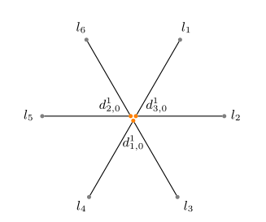</p> </div> </span> <span data-fragment-index="19" class="fragment fade-out hide"> <div data-fragment-index="15" style="margin-left: 55%;width:50%" id="" class="fragment graph"> <p>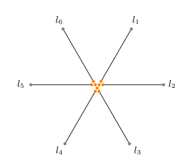</p> </div> </span> <div data-fragment-index="19" style="margin-left: 55%;width:50%" id="" class="fragment graph"> <img style="display: block; margin-left: auto; margin-right: auto; width:100%;" width="auto" height="100%" data-src="images/graphs/top8-v2.svg"> </div> </div> </section> <section class="graph-section" id="ascendlayergraph1"> <div style="width: 100%; height:80vh"> <div style="width: 49%; float: left;font-size: 0.65em;"> <b style="font-size:0.99em">Ascending Layer$^{\dagger}$</b> <ul data-fragment-index="1" class="fragment"> <span data-fragment-index="8" class="fragment hide fade-out"> <li>Purpose: The ascending layer connects the bottom layer with the top layer</li> <p></p> <!-- <li data-fragment-index="4" class="fragment"><span>For each element $u \in X$, place 2 vertices $u', l'$ such that <ul> <li data-fragment-index="5" class="fragment"> $u'$ is directly above a vertex corresponding to $u \in X$ </li> <li data-fragment-index="6" class="fragment"> $l'$ is directly below a terminal $l$ corresponding to $u \in X$ </li> <li data-fragment-index="7" class="fragment"> Create edges $\{u, u'\}$, $\{u', l'\}$, $\{l', l\}$ </li> </ul> </li> --> </span> <li data-fragment-index="9" class="fragment">Replace every edge with a chain of vertex triples that form a isosceles triangle with two edges of length 1 and one of $\epsilon$ </li> </ul> </div> <span style="position: absolute; left:0; bottom: 5em; width:100%" data-fragment-index="10" class="fragment fade-out hide"> <div data-fragment-index="2" style="width:100%" id="" class="row fragment"> <div id="" class=" column"> <p>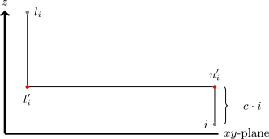</p> </div> <div id="" data-fragment-index="3" class="fragment column"> <img style="" width="auto" height="100%" data-src="images/graphs/ascending2.svg"> </div> <div id="" data-fragment-index="3" class="fragment column"> <img style="" width="auto" height="100%" data-src="images/graphs/ascending3.svg"> </div> </div> </span> <span style="position: absolute; left:0; bottom: 5em; width:100%"> <div data-fragment-index="10" style="width:100%;" id="" class="row fragment"> <div id="" class=" column"> <img style="" width="auto" height="100%" data-src="images/graphs/ascending4-v1.svg"> </div> <div id="" class=" column"> <img style="" width="auto" height="100%" data-src="images/graphs/ascending5.svg"> </div> <div id="" class=" column"> <p>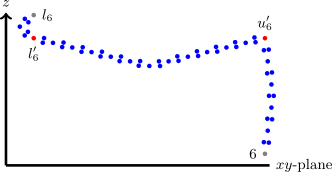</p> </div> </div> </span> <div style="position: absolute; left:0; bottom: 5em; width:100%;height: 1em;font-size: 0.35em;">$\dagger$ Additional protocol is necessary to avoid ascending layers bumping into each other.</div> </section> <section class="graph-section" id="alllayers" data-transition="fade-out"> <div style="width: 100%; height:80vh"> <div style="width: 100%; float: left;font-size: 0.65em;"> <b style="font-size:0.99em">All Layers$^{\dagger}$</b> <ul data-fragment-index="1" class="fragment"> <li data-fragment-index="1" class="fragment"> Example from PC-X3C Slide<br> <span data-fragment-index="2" class="fragment">$I = (X,\mathcal{C})$</span> <ul data-fragment-index="14" class="fragment"> <li>$\small X = \{1,2,3,4,5,6\}$</li> <li>$\small \mathcal{C} = \{\{1,2,3\}, \{1,2,4\}, \{1,3,5\}, \{2,4,6\}, \{3,5,6\}, \{4,5,6\}\}$$\small ~~~= \{C_1,C_2,C_3,C_4,C_5,C_6\}$</li> </ul> </li> </ul> </div> <div style="position: absolute; left:0; bottom: 3em; width:100%" data-fragment-index="15" id="" class="row fragment"> <div id="" class=" column"> Bottom Layer <img style="" width="auto" height="100%" data-src="images/graphs/bottom1.svg"> </div> <div id="" class=" column"> Ascending Layer <img style="" width="auto" height="100%" data-src="images/graphs/ascending4-v1.svg"> </div> <div id="" class=" column"> Top Layer <p>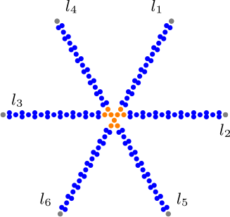</p> </div> </div> </div> <div style="position: absolute; left:0; bottom: 5em; width:100%;height: 1em;font-size: 0.35em;">$\dagger$ Additional protocol is necessary to avoid ascending layers bumping into each other.</div> </section> <section class="graph-section" id="allcomp" data-transition="fade-in"> <div style="width: 100%; height:80vh"> <div style="width: 100%; float: left;font-size: 0.65em;"> <b style="font-size:0.99em">All Layers$^\dagger$</b> <ul> <li> Example from PC-X3C Slide<br> <span>$I = (X,\mathcal{C})$</span> <ul> <li>$\small X = \{1,2,3,4,5,6\}$</li> <li>$\small \mathcal{C} = \{\{1,2,3\}, \{1,2,4\}, \{1,3,5\}, \{2,4,6\}, \{3,5,6\}, \{4,5,6\}\}$$\small ~~~= \{C_1,C_2,C_3,C_4,C_5,C_6\}$</li> </ul> </li> </ul> </div> <div style="width:1250px;height: 575px;" id="comp" class="row"></div> <!-- <div id="comp0" class="fragment"></div> --> <div id="comp1" class="fragment"></div> <div id="comp2" class="fragment"></div> <div id="comp3" class="fragment"></div> <div id="comp4" class="fragment"></div> <div id="comp5" class="fragment"></div> <div id="comp6" class="fragment"></div> <div id="comp7" class="fragment"></div> <div id="comp8" class="fragment"></div> <div id="comp9" class="fragment"></div> </div> <div style="position: absolute; left:0; bottom: 5em; width:100%;height: 1em;font-size: 0.35em;">$\dagger$ Additional protocol is necessary to avoid ascending layers bumping into each other.</div> </section> <section class="graph-section" id="ppoutcomegraph1"> <div style="width: 100%;"> <div> <b style="font-size:0.99em">Permanent popular outcome $\pi_{pp}$</b> <ul data-fragment-index="1" class="fragment"> <li><span data-fragment-index="2" class="fragment">For permanent popular outcome $\pi_{pp}$ we have <ul> <li data-fragment-index="3" class="fragment unhide" style="display: none"> For each vertex $v$, $\delta(v, \pi(v))$ is minimized </li> <li data-fragment-index="4" class="fragment unhide" style="display: none"> Exists regardless of PC-X3C instance $I$ having a solution </li> </ul> </li> </ul> </div> </div> </section> <section class="graph-section" id="ppbot0" data-transition="fade-out"> <div style="width: 100%;"> <div> <b style="font-size:0.99em">Permanent popular outcome $\pi_{pp}$</b> </div> <div style="width:100%"> <div> Bottom Layer </div> <div id="ppbot0-anim" style="display: block; width:85%"></div> </div> </div> </section> <section class="graph-section" id="ppbot1" data-transition="fade"> <div style="width: 100%;"> <div> <b style="font-size:0.99em">Permanent popular outcome $\pi_{pp}$</b> </div> <div style="width:100%"> <div> Bottom Layer </div> <div id="ppbot1-anim" style="display: block; width:85%"></div> </div> </div> </section> <section class="graph-section" id="ppbot2" data-transition="fade"> <div style="width: 100%;"> <div> <b style="font-size:0.99em">Permanent popular outcome $\pi_{pp}$</b> </div> <div style="width:100%"> <div> Bottom Layer </div> <div id="ppbot2-anim" style="display: block; width:85%"></div> </div> </div> </section> <section class="graph-section" id="ppbot3" data-transition="fade"> <div style="width: 100%;"> <div> <b style="font-size:0.99em">Permanent popular outcome $\pi_{pp}$</b> </div> <div style="width:100%"> <div> Bottom Layer </div> <div id="ppbot3-anim" style="display: block; width:85%"></div> </div> </div> </section> <section class="graph-section" id="ppbot4" data-transition="fade-in"> <div style="width: 100%;"> <div> <b style="font-size:0.99em">Permanent popular outcome $\pi_{pp}$</b> </div> <div style="width:100%"> <div> Bottom Layer </div> <div id="ppbot4-anim" style="display: block; width:85%"></div> </div> </div> </section> <section class="graph-section" id="ppascending0" data-transition="fade-out"> <div style="width: 100%;"> <div> <b style="font-size:0.99em">Permanent popular outcome $\pi_{pp}$</b> </div> <div style="width:100%"> <div> Ascending Layer </div> <div id="ppascending0-anim" style="display: block; width:85%"></div> </div> </div> </section> <section class="graph-section" id="ppascending1" data-transition="fade-in"> <div style="width: 100%;"> <div> <b style="font-size:0.99em">Permanent popular outcome $\pi_{pp}$</b> </div> <div style="width:100%"> <div> Ascending Layer </div> <div id="ppascending1-anim" style="display: block; width:85%"></div> </div> </div> </section> <section class="graph-section" id="pptop0" data-transition="fade-out"> <div style="width: 100%;"> <div> <b style="font-size:0.99em">Permanent popular outcome $\pi_{pp}$</b> </div> <div style="width:100%"> <div> Top Layer </div> <div id="pptop0-anim" style="display: block; width:50%"></div> </div> </div> </section> <section class="graph-section" id="pptop1" data-transition="fade"> <div style="width: 100%;"> <div> <b style="font-size:0.99em">Permanent popular outcome $\pi_{pp}$</b> </div> <div style="width:100%"> <div> Top Layer </div> <div id="pptop1-anim" style="display: block; width:50%"></div> </div> </div> </section> <section class="graph-section" id="ppoutcomegraph1" data-transition="fade-in"> <div style="width: 100%;"> <p style="color:white">Solution $S = \{C_1, C_6\}$</p> <div style="width:100%" class="row"> <div class=" column"> Bottom Layer <p>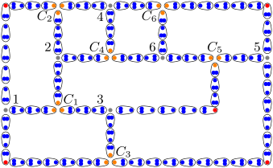</p> </div> <div id="" class=" column"> Ascending Layer <p>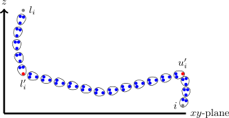</p> </div> <div id="" class=" column"> Top Layer <p>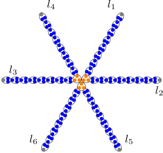</p> </div> </div> </div> </section> <!-- ----------------------------------------------------------------------------------------------------------- --> <section class="graph-section" id="redoutcomegraph1"> <div style="width: 100%;"> <div> <b style="font-size:0.99em">Reduced outcome $\pi_{S}$</b> <ul> <span > <li class="fragment">For reduced outcome $\pi_{S}$ we have <ul> <li class="fragment"> For each vertex $v$, $\delta(v, \pi(v))$ is minimized </li> <li class="fragment" style="color:red"> Exactly one per solution $S$ of PC-X3C instance $I$ exists. </li> </ul> </li> </ul> </div> <p class="fragment">Solution $S = \{C_1, C_6\} = \{\{1,2,3\}, \{4,5,6\}\}$</p> </div> </section> <section class="graph-section" id="reducedbot0" data-transition="fade-out"> <div style="width: 100%;"> <div> <b style="font-size:0.99em">Reduced outcome $\pi_{reduced}$</b> </div> <p>Solution $S = \{C_1, C_6\} = \{\{1,2,3\}, \{4,5,6\}\}$</p> <div style="width:100%"> <div> Bottom Layer </div> <div id="reducedbot0-anim" style="display: block; width:75%"></div> </div> </div> </section> <section class="graph-section" id="reducedbot1" data-transition="fade"> <div style="width: 100%;"> <div> <b style="font-size:0.99em">Reduced outcome $\pi_{reduced}$</b> </div> <p>Solution $S = \{C_1, C_6\} = \{\{1,2,3\}, \{4,5,6\}\}$</p> <div style="width:100%"> <div> Bottom Layer </div> <div id="reducedbot1-anim" style="display: block; width:75%"></div> </div> </div> </section> <section class="graph-section" id="reducedbot2" data-transition="fade"> <div style="width: 100%;"> <div> <b style="font-size:0.99em">Reduced outcome $\pi_{reduced}$</b> </div> <p>Solution $S = \{C_1, C_6\} = \{\{1,2,3\}, \{4,5,6\}\}$</p> <div style="width:100%"> <div> Bottom Layer </div> <div id="reducedbot2-anim" style="display: block; width:75%"></div> </div> </div> </section> <section class="graph-section" id="reducedbot3" data-transition="fade"> <div style="width: 100%;"> <div> <b style="font-size:0.99em">Reduced outcome $\pi_{reduced}$</b> </div> <p>Solution $S = \{C_1, C_6\} = \{\{1,2,3\}, \{4,5,6\}\}$</p> <div style="width:100%"> <div> Bottom Layer </div> <div id="reducedbot3-anim" style="display: block; width:75%"></div> </div> </div> </section> <section class="graph-section" id="reducedbot4" data-transition="fade"> <div style="width: 100%;"> <div> <b style="font-size:0.99em">Reduced outcome $\pi_{reduced}$</b> </div> <p>Solution $S = \{C_1, C_6\} = \{\{1,2,3\}, \{4,5,6\}\}$</p> <div style="width:100%"> <div> Bottom Layer </div> <div id="reducedbot4-anim" style="display: block; width:75%"></div> </div> </div> </section> <section class="graph-section" id="reducedbot5" data-transition="fade-in"> <div style="width: 100%;"> <div> <b style="font-size:0.99em">Reduced outcome $\pi_{reduced}$</b> </div> <p>Solution $S = \{C_1, C_6\} = \{\{1,2,3\}, \{4,5,6\}\}$</p> <div style="width:100%"> <div> Bottom Layer </div> <div id="reducedbot5-anim" style="display: block; width:75%"></div> </div> </div> </section> <section class="graph-section" id="reducedascending0" data-transition="fade-out"> <div style="width: 100%;"> <div> <b style="font-size:0.99em">Reduced outcome $\pi_{reduced}$</b> </div> <p>Solution $S = \{C_1, C_6\} = \{\{1,2,3\}, \{4,5,6\}\}$</p> <div style="width:100%"> <div> Ascending Layer </div> <div id="reducedascending0-anim" style="display: block; width:75%"></div> </div> </div> </section> <section class="graph-section" id="reducedascending1" data-transition="fade-in"> <div style="width: 100%;"> <div> <b style="font-size:0.99em">Reduced outcome $\pi_{reduced}$</b> </div> <p>Solution $S = \{C_1, C_6\} = \{\{1,2,3\}, \{4,5,6\}\}$</p> <div style="width:100%"> <div> Ascending Layer </div> <div id="reducedascending1-anim" style="display: block; width:75%"></div> </div> </div> </section> <section class="graph-section" id="reducedtop0" data-transition="fade-out"> <div style="width: 100%;"> <div> <b style="font-size:0.99em">Reduced outcome $\pi_{reduced}$</b> </div> <p>Solution $S = \{C_1, C_6\} = \{\{1,2,3\}, \{4,5,6\}\}$</p> <div style="width:100%"> <div> Top Layer </div> <div id="reducedtop0-anim" style="display: block; width:50%"></div> </div> </div> </section> <section class="graph-section" id="reducedtop1" data-transition="fade-in"> <div style="width: 100%;"> <div> <b style="font-size:0.99em">Reduced outcome $\pi_{reduced}$</b> </div> <p>Solution $S = \{C_1, C_6\} = \{\{1,2,3\}, \{4,5,6\}\}$</p> <div style="width:100%"> <div> Top Layer </div> <div id="reducedtop1-anim" style="display: block; width:50%"></div> </div> </div> </section> <section class="graph-section" id="redoutcomegraph1"> <div style="width: 100%;"> <p >Solution $S = \{C_1, C_6\} = \{\{1,2,3\}, \{4,5,6\}\}$</p> <div style="width:100%" class="row"> <div class=" column"> Bottom Layer <p>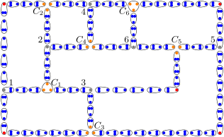</p> </div> <div id="" class=" column"> Ascending Layer <img style="display: block;" width="auto" height="100%" data-src="images/graphs/ascending10-v1.svg"> </div> <div id="" class=" column"> Top Layer <img style="display: block;" width="auto" height="100%" data-src="images/graphs/top5.svg"> </div> </div> </div> </section> <!-- <section class="graph-section"> <h5><b>Theorem:</b> strict popularity with <span style="color:red"><b>room size 3</b></span> is <span style="color:red"><b>co-NP-hard</b></span></h5> <div style="width: 100%;"> <div style="width:100%" class="row"> <div class=" column"> <b>$\pi_{pp}$ Top Layer</b> <img style="display: block;" width="100%" height="auto" data-src="images/graphs/top6-zoomed.svg"> </div> <div id="" class=" column"> <b>$\pi_{S}$ Top Layer</b> </div> </div> </div> </section> --> <section class="graph-section" id="conclusion"> <p style="width: 100%; text-align: center;"> <span data-fragment-index="46" class="fragment">PC-X3C instance $I$ has <b>no</b> solution<br> <span data-fragment-index="47" class="fragment">$\iff$</span><br> <span data-fragment-index="48" class="fragment">$G$ has a <b>strictly popular</b> outcome</span><span data-fragment-index="49" class="fragment"> $\Box$</span></span> <p> </section> <section> <div style="width: 100%;"> <br> <table> <tr> <th>Equilibrium Concept</th> <th>Room size</th> <th>Multidimensional Stable Roommates Problem</th> <th>Roommate Diversity Problem</th> <th>3D-Euclidean Stable Roommates</th> </tr> <tr> <td>Popularity</td> <td>$2$</td> <td><span style="color:red">NP-hard</span>$^{[4,5,6]}$</td> <td style="color:green">P</td> <td data-fragment-index="3" class="fragment">?</td> </tr> <tr> <td>Strict Popularity</td> <td>$\geq 3$</td> <td><span style="color:red">NP-hard</span>$^{[4,5,6]}$</td> <td style="color: red">co-NP-hard</td> <td data-fragment-index="2" class="fragment">?</td> </tr> <tr data-fragment-index="1" class="fragment"> <td>Strict Popularity</td> <td>$3$</td> <td>?</td> <td>?</td> <td style="color: red">co-NP-hard</td> </tr> </table> </div> </section> --- <section style="height: 100%;position: relative;"> <h1 style="position: absolute; top: 50%; left: 50%;transform: translate(-50%, -50%); width: 100%;">Future Work</h1> </section> --- ### Roommate Diversity Problem <section> <table style="font-size:0.5em"> <tr> <th>Setting</th> <th>Room size</th> <th>Preferences</th> <th>Results</th> <th>Dissertation</th> <th data-fragment-index="1" class="fragment">Future Work</th> </tr> <tr> <td>Popularity</td> <td>$2$</td> <td>Unrestricted</td> <td> <ul style="color:green"> <li><b>P</b></li> <li>Popular outcome is <b>GUARANTEED</b> to exist</li> <li>Popular outcome computable in polynomial time</li> </ul> </td> <td><b>Theorem 3.1.2.</b></td> <td style="color:white"></td> </tr> <tr> <td>Strict Popularity<span></td> <td>$\geq 3$</td> <td>Dichotomous preferences</td> <td> <ul style="color:red"> <li><b>co-NP-hard</b></li> </ul> </td> <td><b>Theorem 3.2.2.</b></td> <td> <ul> <li data-fragment-index="2" class="fragment" style="color:gray"><b>Completeness<b></li> <li data-fragment-index="4" class="fragment" style="color:gray"><b>Strict Preferences<b></li> </ul> </td> </tr> <tr id="resultmixpop"> <td>Mixed Popularity</td> <td>$\geq 3$</td> <td>Dichotomous preferences</td> <td> <ul style="color:green"> <li><b>P</b></li> <li>Mixed Popular outcome is <b>GUARANTEED</b> to exist</li> <li style="color:red">Mixed Popular outcome <b>CANNOT</b> be computed in polynomial time, unless P=NP</li> </ul> </td> <td><b>Theorem 3.3.1.<br>Theorem 3.3.6.</b></td> <td> <ul> <li data-fragment-index="4" class="fragment" style="color:gray"><b>Strict Preferences<b></li> <li data-fragment-index="5" class="fragment" style="color:gray"><b>Parameterized Complexity<b></li> </ul> </td> </tr> <tr id="resultpop"> <td>Popularity</td> <td>$\geq 3$</td> <td>Trichotomous preferences</td> <td> <ul style="color:red"> <li><b>co-NP-hard</b></li> </ul> </td> <td><b>Theorem 3.4.17.</b></td> <td> <ul> <li data-fragment-index="2" class="fragment" style="color:gray"><b>Completeness<b></li> <li data-fragment-index="3" class="fragment" style="color:gray"><b>Dichotomous Preferences<b></li> <li data-fragment-index="4" class="fragment" style="color:gray"><b>Strict Preferences<b></li> <li data-fragment-index="5" class="fragment" style="color:gray"><b>Parameterized Complexity<b></li> </ul> </td> </tr> </table> </section> --- ### 3D-Euclidean Stable Roommates <section> <table> <tr> <th>Equilibrium Concept</th> <th>Room size</th> <th> 3D-Euclidean Stable Roommates</th> </tr> <tr> <td>Popularity</td> <td>$2$</td> <td>?</td> </tr> <tr> <td>Strict Popularity</td> <td>$3$</td> <td style="color: red">co-NP-hard</td> </tr> <tr data-fragment-index="1" class="fragment"> <td>Strict Popularity</td> <td>$> 3$</td> <td>?</td> </tr> <tr data-fragment-index="2" class="fragment"> <td>Mixed Popularity</td> <td>$\geq 3$</td> <td>?</td> </tr> <tr data-fragment-index="3" class="fragment"> <td>Popularity</td> <td>$\geq 3$</td> <td>?</td> </tr> </table> </section> --- ### Bibliography <section> <table style="font-size:0.55em"> <tr> <td>[1]</td> <td> Knuth, D. E. (1976). Mariages stables et leurs relations avec d'autres problèmes combinatoires: introduction à l'analyse mathématique des algorithmes. (No Title). </td> </tr> <tr> <td>[2]</td> <td> Gale, D., & Shapley, L. S. (1962). College admissions and the stability of marriage. The American Mathematical Monthly, 69(1), 9-15. </td> </tr> <tr> <td>[3]</td> <td>Gärdenfors, P.: Match making: Assignments based on bilateral preferences. Systems Research and Behavioral Science 20, 166–173 (1975). https://doi.org/10.1002/bs.3830200304, https://onlinelibrary.wiley.com/doi/10.1002/bs.3830200304</td> </tr> <tr> <td>[4]</td> <td>Cseh, Á., & Kavitha, T. (2021). Popular matchings in complete graphs. Algorithmica, 83(5), 1493-1523.</td> </tr> <tr> <td>[5]</td> <td>Faenza, Y., Kavitha, T., Powers, V., & Zhang, X. (2019). Popular matchings and limits to tractability. In Proceedings of the Thirtieth Annual ACM-SIAM Symposium on Discrete Algorithms (pp. 2790-2809). Society for Industrial and Applied Mathematics.</td> </tr> <tr> <td>[6]</td> <td>Gupta, S., Misra, P., Saurabh, S., & Zehavi, M. (2021). Popular matching in roommates setting is NP-hard. ACM Transactions on Computation Theory (TOCT), 13(2), 1-20.</td> </tr> <tr> <td>[7]</td> <td>Boehmer, N., Elkind, E.: Stable Roommate Problem with Diversity Preferences. In: Proceedings of the Twenty-Ninth International Joint Conference on Artificial Intelligence. IJCAI’20 (2021). https://doi.org/10.24963/ijcai.2020/14</td> </tr> <tr> <td>[8]</td> <td>Chen, J., & Roy, S. (2021). Multi-dimensional stable roommates in 2-dimensional Euclidean space. arXiv preprint arXiv:2108.03868.</td> </tr> <tr> <td>[9]</td> <td>Bredereck, R., Elkind, E., & Igarashi, A. (2019). Hedonic diversity games. arXiv preprint arXiv:1903.00303.</td> </tr> <tr> <td>[10]</td> <td>Duan, R., Pettie, S., & Su, H. H. (2018). Scaling algorithms for weighted matching in general graphs. ACM Transactions on Algorithms (TALG), 14(1), 1-35.</td> </tr> <tr> <td>[11]</td> <td>Arkin, E. M., Bae, S. W., Efrat, A., Okamoto, K., Mitchell, J. S., & Polishchuk, V. (2009). Geometric stable roommates. Information Processing Letters, 109(4), 219-224.</td> </tr> <tr> <td>[12]</td> <td>Di Battista, G., Liotta, G., & Vargiu, F. (1998). Spirality and optimal orthogonal drawings. SIAM Journal on Computing, 27(6), 1764-1811.</td> </tr> <tr> <td>[13]</td> <td>Irving, R.W. (1985). An Efficient Algorithm for the "Stable Roommates" Problem. J. Algorithms, 6, 577-595.</td> </tr> <tr> <td>[14]</td> <td>Ng, C., & Hirschberg, D. S. (1991). Three-Dimensional Stabl Matching Problems. SIAM Journal on Discrete Mathematics, 4(2), 245–252.</td> </tr> </table> </section> --- <section style="height: 100%;position: relative;"> <h1 style="position: absolute; top: 50%; left: 50%;transform: translate(-50%, -50%); width: 100%;">Thank you for your attention!</h1> </section> --- <section style="height: 100%;position: relative;"> <h1 style="position: absolute; top: 50%; left: 50%;transform: translate(-50%, -50%); width: 100%;">Appendix</h1> </section> --- ### Table of Contents <section> - Preliminaries - Popularity - Q1: Hardness Upperbound - Q2: Guaranteed existence of Popular Outcome in Room Size 2 </section> --- <section style="height: 100%;position: relative;"> <h1 style="position: absolute; top: 50%; left: 50%;transform: translate(-50%, -50%); width: 100%;">Preliminaries</h1> </section> --- ### Popularity$^{\text{[3]}}$ <!-- -----------------------------------graph 3------------------------------------- --> <section class="graph-section" id="graph3-appendix"> <!-- <h5>Definition</h5> --> <div style="width: 100%;"> <div style="width: 49%; float: left;font-size: 0.65em;"> <ul> <li data-fragment-index="0" class="fragment">Outcomes</br> <ul> <li data-fragment-index="1" class="fragment">$\pi$</li> <li data-fragment-index="5" class="fragment">$\pi'$</li> </ul> </li> <li data-fragment-index="13" class="fragment">$\pi$ is more popular than $\pi'$ <ul> <li>(Strictly) More $\vee$ than $\wedge$</li><br> </ul> <li data-fragment-index="14" class="fragment">$N(\pi, \pi') = \{a | \pi \succ_a \pi'\}$ <span data-fragment-index="15" class="fragment"><br><span style="color:white">$N(\pi, \pi')$</span>$~= $ agents that prefer $\pi$ over $\pi'$</span></li> </li> <br> <li data-fragment-index="16" class="fragment"> $\pi$ is popular<br> $\iff$<br> $\forall_{\pi'}: |N(\pi, \pi')| \geq |N(\pi', \pi)|$</li> </ul> <p></p> <br> <br> </div> <div data-fragment-index="2" style="margin-left: 50%;width:50%" id="graph3-cy-qa" class="fragment graph"></div> <div data-fragment-index="3" id="graph32-cy-qa" class="fragment"></div> <div data-fragment-index="4" id="graph33-cy-qa" class="fragment"></div> <div data-fragment-index="6" id="graph34-cy-qa" class="fragment"></div> <div data-fragment-index="7" id="graph35-cy-qa" class="fragment"></div> <div data-fragment-index="8" id="graph36-cy-qa" class="fragment"></div> <div data-fragment-index="9" id="graph37-cy-qa" class="fragment"></div> <div data-fragment-index="10" id="graph38-cy-qa" class="fragment"></div> <div data-fragment-index="11" id="graph39-cy-qa" class="fragment"></div> <div data-fragment-index="12" id="graph310-cy-qa" class="fragment"></div> </div> </section> --- <section style="height: 100%;position: relative;"> <h1 style="position: absolute; top: 50%; left: 50%;transform: translate(-50%, -50%); width: 100%;">Q1: Hardness Upperbound</h1> </section> --- ### Q1: Hardness Upperbound <section class="graph-section"> <div style="width: 100%;"> <ul> <li data-fragment-index="1" class="fragment">Game $G = ($<span style="color:red">$R$</span>$,$<span style="color:blue">$B$</span>$,s, (\succsim_a)_{a \in }$<span style="color:red">$_R$</span>$_\cup$<span style="color:blue">$_B$</span>$)$</li> <li data-fragment-index="2" class="fragment">$N(\pi, \pi') = \{a \in $<span style="color:red">$R$</span>$\cup$<span style="color:blue">$B$</span>$ ~|~ \pi \succ_a \pi'\}$ <ul> <li data-fragment-index="3" class="fragment">$N(\pi, \pi')$ can be computed in linear time</li> </ul> </li> <li data-fragment-index="4" class="fragment"> $P(G, \pi, \pi') = \begin{cases} True, & |N(\pi, \pi')| \geq |N(\pi', \pi)| \\ False, & \text{ Otherwise} \end{cases}$ </li> <br> <li data-fragment-index="5" class="fragment">$G$ is a yes-instance $\iff \exists_{\pi}\forall_{\pi'}P(G,\pi,\pi')$</br> <span data-fragment-index="7" class="fragment">$\iff$</span><br> <span data-fragment-index="8" class="fragment">$G \in \mathcal{L}_{pop} \iff \exists_{\pi}\forall_{\pi'}P(G,\pi,\pi')$</span><span data-fragment-index="11" class="fragment">$\iff \mathcal{L}_{pop} \in \Sigma_2$</span><br> </li> <br> <li data-fragment-index="9" class="fragment">PH $= \bigcup\limits_{i=0}^{\infty}\Sigma_i$</li> <li data-fragment-index="10" class="fragment">$\Sigma_i = \exists_{y_1}\forall_{y_2}...Q_{y_i}P(x,y_1, y_1, \dots, y_i)$</li> </ul> </div> </section> --- <section style="height: 100%;position: relative;"> <h1 style="position: absolute; top: 50%; left: 50%;transform: translate(-50%, -50%); width: 100%;">Q2: Guaranteed existence of Popular Outcome in Room Size 2</h1> </section> --- ### Q2: Guaranteed existence of Popular Outcome in Room Size 2 <!-- -----------------------------------graph 4------------------------------------- --> <section class="graph-section" id="graph4-appendix" data-transition="fade-out"> <div style="width: 100%;"> <div style="width: 49%; float: left;font-size: 0.6em;"> <ul> <li data-fragment-index="1" class="fragment">Game $G = ($<span style="color:red">$R$</span>$,$<span style="color:blue">$B$</span>$,2, (\succsim_a)_{a \in }$<span style="color:red">$_R$</span>$_\cup$<span style="color:blue">$_B$</span>$)$</br> </li> <li data-fragment-index="7" class="fragment">3 possible preference types <ul> <li data-fragment-index="8" class="fragment">Prefers to be paired with <b>OWN</b> color</li> <li data-fragment-index="9" class="fragment">Prefers to be paired with <b>OTHER</b> color</li> <li data-fragment-index="10" class="fragment"><b>Indifferent</b></li> </ul> </li> <li data-fragment-index="11" class="fragment">Weighted complete graph $G' = (\color{red}R\color{black}\cup\color{blue}B\color{black}, E, w)$ <ul> <!-- <span data-fragment-index="14" class="fragment"> --> <!-- <div style="width: 100%; overflow: hidden;"> --> <li data-fragment-index="14" class="fragment" style="float: left;"> $w(x,y) = \begin{cases} ~\\ ~ \\ ~ \\ \end{cases}$ </li> <div style="display:flow-root"> <span data-fragment-index="16" class="fragment">$\small 2~~~~ \{x,y\} \text{ liked by both } x \mathbf{\text{ AND }} y$</span><br> <span data-fragment-index="17" class="fragment">$\small 1~~~~ \{x,y\} \text{ liked by } x \mathbf{\text{ XOR }} y$</span><br> <span data-fragment-index="18" class="fragment">$\small 0~~~~ \{x,y\} \text{ disliked by both } x \mathbf{\text{ AND }} y$</span> </div><br> <!-- </div> --> <!-- </span> --> <li data-fragment-index="19" class="fragment">Let $M$ be a matching <ul> <li data-fragment-index="21" class="fragment">Let $\pi_{M}$ be the corresponding outcome</li> </ul> </li> <br> <li data-fragment-index="22" class="fragment">Let $h(\pi_M) = \{a \in $<span style="color:red">$R$</span>$\cup$<span style="color:blue">$B$</span>$ ~|~ a \text{ likes } \pi(a)\}$</li> <ul> <li data-fragment-index="23" class="fragment">$w(M) = |h(\pi_M)|$</li> </ul> </li> </ul> <br> </li> </ul> </div> <div data-fragment-index="3" style="margin-left: 50%;width:50%" id="graph4-cy-qa" class="fragment graph"></div> <div data-fragment-index="12" id="graph42-cy-qa" class="fragment"></div> </div> </section> <section class="graph-section" data-transition="fade"> <div style="width: 100%;"> <div style="width: 49%; float: left;font-size: 0.6em;"> <ul> <li >Game $G = ($<span style="color:red">$R$</span>$,$<span style="color:blue">$B$</span>$,2, (\succsim_a)_{a \in }$<span style="color:red">$_R$</span>$_\cup$<span style="color:blue">$_B$</span>$)$</br> </li> <li >3 possible preference types <ul> <li >Prefers to be paired with <b>OWN</b> color</li> <li >Prefers to be paired with <b>OTHER</b> color</li> <li ><b>Indifferent</b></li> </ul> </li> <li >Weighted complete graph $G' = (\color{red}R\color{black}\cup\color{blue}B\color{black}, E, w)$ <ul> <!-- <span > --> <!-- <div style="width: 100%; overflow: hidden;"> --> <li style="float: left;"> $w(x,y) = \begin{cases} ~\\ ~ \\ ~ \\ \end{cases}$ </li> <div style="display:flow-root"> <span >$\small 2~~~~ \{x,y\} \text{ liked by both } x \mathbf{\text{ AND }} y$</span><br> <span >$\small 1~~~~ \{x,y\} \text{ liked by } x \mathbf{\text{ XOR }} y$</span><br> <span >$\small 0~~~~ \{x,y\} \text{ disliked by both } x \mathbf{\text{ AND }} y$</span> </div><br> <!-- </div> --> <!-- </span> --> <li >Let $M$ be a matching <ul> <li >Let $\pi_{M}$ be the corresponding outcome</li> </ul> </li> <br> <li >Let $h(\pi_M) = \{a \in $<span style="color:red">$R$</span>$\cup$<span style="color:blue">$B$</span>$ ~|~ a \text{ likes } \pi(a)\}$</li> <ul> <li >$w(M) = |h(\pi_M)|$</li> </ul> </li> </ul> <br> </li> </ul> </div> <div style="margin-left: 60%;width:50%" class="graph"></div> </div> </section> <section class="graph-section" data-transition="fade"> <div style="width: 100%;"> <div style="width: 49%; float: left;font-size: 0.6em;"> <ul> <li >Game $G = ($<span style="color:red">$R$</span>$,$<span style="color:blue">$B$</span>$,2, (\succsim_a)_{a \in }$<span style="color:red">$_R$</span>$_\cup$<span style="color:blue">$_B$</span>$)$</br> </li> <li >3 possible preference types <ul> <li >Prefers to be paired with <b>OWN</b> color</li> <li >Prefers to be paired with <b>OTHER</b> color</li> <li ><b>Indifferent</b></li> </ul> </li> <li >Weighted complete graph $G' = (\color{red}R\color{black}\cup\color{blue}B\color{black}, E, w)$ <ul> <!-- <span > --> <!-- <div style="width: 100%; overflow: hidden;"> --> <li style="float: left;"> $w(x,y) = \begin{cases} ~\\ ~ \\ ~ \\ \end{cases}$ </li> <div style="display:flow-root"> <span >$\small 2~~~~ \{x,y\} \text{ liked by both } x \mathbf{\text{ AND }} y$</span><br> <span >$\small 1~~~~ \{x,y\} \text{ liked by } x \mathbf{\text{ XOR }} y$</span><br> <span >$\small 0~~~~ \{x,y\} \text{ disliked by both } x \mathbf{\text{ AND }} y$</span> </div><br> <!-- </div> --> <!-- </span> --> <li >Let $M$ be a matching <ul> <li >Let $\pi_{M}$ be the corresponding outcome</li> </ul> </li> <br> <li >Let $h(\pi_M) = \{a \in $<span style="color:red">$R$</span>$\cup$<span style="color:blue">$B$</span>$ ~|~ a \text{ likes } \pi(a)\}$</li> <ul> <li >$w(M) = |h(\pi_M)|$</li> </ul> </li> </ul> <br> </li> </ul> </div> <div style="margin-left: 60%;width:50%" class="graph"></div> </div> </section> <section class="graph-section" data-transition="fade"> <div style="width: 100%;"> <div style="width: 49%; float: left;font-size: 0.6em;"> <ul> <li >Game $G = ($<span style="color:red">$R$</span>$,$<span style="color:blue">$B$</span>$,2, (\succsim_a)_{a \in }$<span style="color:red">$_R$</span>$_\cup$<span style="color:blue">$_B$</span>$)$</br> </li> <li >3 possible preference types <ul> <li >Prefers to be paired with <b>OWN</b> color</li> <li >Prefers to be paired with <b>OTHER</b> color</li> <li ><b>Indifferent</b></li> </ul> </li> <li >Weighted complete graph $G' = (\color{red}R\color{black}\cup\color{blue}B\color{black}, E, w)$ <ul> <!-- <span > --> <!-- <div style="width: 100%; overflow: hidden;"> --> <li style="float: left;"> $w(x,y) = \begin{cases} ~\\ ~ \\ ~ \\ \end{cases}$ </li> <div style="display:flow-root"> <span >$\small 2~~~~ \{x,y\} \text{ liked by both } x \mathbf{\text{ AND }} y$</span><br> <span >$\small 1~~~~ \{x,y\} \text{ liked by } x \mathbf{\text{ XOR }} y$</span><br> <span >$\small 0~~~~ \{x,y\} \text{ disliked by both } x \mathbf{\text{ AND }} y$</span> </div><br> <!-- </div> --> <!-- </span> --> <li >Let $M$ be a matching <ul> <li >Let $\pi_{M}$ be the corresponding outcome</li> </ul> </li> <br> <li >Let $h(\pi_M) = \{a \in $<span style="color:red">$R$</span>$\cup$<span style="color:blue">$B$</span>$ ~|~ a \text{ likes } \pi(a)\}$</li> <ul> <li >$w(M) = |h(\pi_M)|$</li> </ul> </li> </ul> <br> </li> </ul> </div> <div style="margin-left: 60%;width:50%" class="graph"></div> </div> </section> <section class="graph-section" data-transition="fade"> <div style="width: 100%;"> <div style="width: 49%; float: left;font-size: 0.6em;"> <ul> <li >Game $G = ($<span style="color:red">$R$</span>$,$<span style="color:blue">$B$</span>$,2, (\succsim_a)_{a \in }$<span style="color:red">$_R$</span>$_\cup$<span style="color:blue">$_B$</span>$)$</br> </li> <li >3 possible preference types <ul> <li >Prefers to be paired with <b>OWN</b> color</li> <li >Prefers to be paired with <b>OTHER</b> color</li> <li ><b>Indifferent</b></li> </ul> </li> <li >Weighted complete graph $G' = (\color{red}R\color{black}\cup\color{blue}B\color{black}, E, w)$ <ul> <!-- <span > --> <!-- <div style="width: 100%; overflow: hidden;"> --> <li style="float: left;"> $w(x,y) = \begin{cases} ~\\ ~ \\ ~ \\ \end{cases}$ </li> <div style="display:flow-root"> <span >$\small 2~~~~ \{x,y\} \text{ liked by both } x \mathbf{\text{ AND }} y$</span><br> <span >$\small 1~~~~ \{x,y\} \text{ liked by } x \mathbf{\text{ XOR }} y$</span><br> <span >$\small 0~~~~ \{x,y\} \text{ disliked by both } x \mathbf{\text{ AND }} y$</span> </div><br> <!-- </div> --> <!-- </span> --> <li >Let $M$ be a matching <ul> <li >Let $\pi_{M}$ be the corresponding outcome</li> </ul> </li> <br> <li >Let $h(\pi_M) = \{a \in $<span style="color:red">$R$</span>$\cup$<span style="color:blue">$B$</span>$ ~|~ a \text{ likes } \pi(a)\}$</li> <ul> <li >$w(M) = |h(\pi_M)|$</li> </ul> </li> </ul> <br> </li> </ul> </div> <div style="margin-left: 60%;width:50%" class="graph"></div> </div> </section> <section class="graph-section" data-transition="fade"> <div style="width: 100%;"> <div style="width: 49%; float: left;font-size: 0.6em;"> <ul> <li >Game $G = ($<span style="color:red">$R$</span>$,$<span style="color:blue">$B$</span>$,2, (\succsim_a)_{a \in }$<span style="color:red">$_R$</span>$_\cup$<span style="color:blue">$_B$</span>$)$</br> </li> <li >3 possible preference types <ul> <li >Prefers to be paired with <b>OWN</b> color</li> <li >Prefers to be paired with <b>OTHER</b> color</li> <li ><b>Indifferent</b></li> </ul> </li> <li >Weighted complete graph $G' = (\color{red}R\color{black}\cup\color{blue}B\color{black}, E, w)$ <ul> <!-- <span > --> <!-- <div style="width: 100%; overflow: hidden;"> --> <li style="float: left;"> $w(x,y) = \begin{cases} ~\\ ~ \\ ~ \\ \end{cases}$ </li> <div style="display:flow-root"> <span >$\small 2~~~~ \{x,y\} \text{ liked by both } x \mathbf{\text{ AND }} y$</span><br> <span >$\small 1~~~~ \{x,y\} \text{ liked by } x \mathbf{\text{ XOR }} y$</span><br> <span >$\small 0~~~~ \{x,y\} \text{ disliked by both } x \mathbf{\text{ AND }} y$</span> </div><br> <!-- </div> --> <!-- </span> --> <li >Let $M$ be a matching <ul> <li >Let $\pi_{M}$ be the corresponding outcome</li> </ul> </li> <br> <li >Let $h(\pi_M) = \{a \in $<span style="color:red">$R$</span>$\cup$<span style="color:blue">$B$</span>$ ~|~ a \text{ likes } \pi(a)\}$</li> <ul> <li >$w(M) = |h(\pi_M)|$</li> </ul> </li> </ul> <br> </li> </ul> </div> <div style="margin-left: 60%;width:50%" class="graph"></div> </div> </section> <section class="graph-section" data-transition="fade"> <div style="width: 100%;"> <div style="width: 49%; float: left;font-size: 0.6em;"> <ul> <li >Game $G = ($<span style="color:red">$R$</span>$,$<span style="color:blue">$B$</span>$,2, (\succsim_a)_{a \in }$<span style="color:red">$_R$</span>$_\cup$<span style="color:blue">$_B$</span>$)$</br> </li> <li >3 possible preference types <ul> <li >Prefers to be paired with <b>OWN</b> color</li> <li >Prefers to be paired with <b>OTHER</b> color</li> <li ><b>Indifferent</b></li> </ul> </li> <li >Weighted complete graph $G' = (\color{red}R\color{black}\cup\color{blue}B\color{black}, E, w)$ <ul> <!-- <span > --> <!-- <div style="width: 100%; overflow: hidden;"> --> <li style="float: left;"> $w(x,y) = \begin{cases} ~\\ ~ \\ ~ \\ \end{cases}$ </li> <div style="display:flow-root"> <span >$\small 2~~~~ \{x,y\} \text{ liked by both } x \mathbf{\text{ AND }} y$</span><br> <span >$\small 1~~~~ \{x,y\} \text{ liked by } x \mathbf{\text{ XOR }} y$</span><br> <span >$\small 0~~~~ \{x,y\} \text{ disliked by both } x \mathbf{\text{ AND }} y$</span> </div><br> <!-- </div> --> <!-- </span> --> <li >Let $M$ be a matching <ul> <li >Let $\pi_{M}$ be the corresponding outcome</li> </ul> </li> <br> <li >Let $h(\pi_M) = \{a \in $<span style="color:red">$R$</span>$\cup$<span style="color:blue">$B$</span>$ ~|~ a \text{ likes } \pi(a)\}$</li> <ul> <li >$w(M) = |h(\pi_M)|$</li> </ul> </li> </ul> <br> </li> </ul> </div> <div style="margin-left: 60%;width:50%" class="graph"></div> </div> </section> <section class="graph-section" data-transition="fade"> <div style="width: 100%;"> <div style="width: 49%; float: left;font-size: 0.6em;"> <ul> <li >Game $G = ($<span style="color:red">$R$</span>$,$<span style="color:blue">$B$</span>$,2, (\succsim_a)_{a \in }$<span style="color:red">$_R$</span>$_\cup$<span style="color:blue">$_B$</span>$)$</br> </li> <li >3 possible preference types <ul> <li >Prefers to be paired with <b>OWN</b> color</li> <li >Prefers to be paired with <b>OTHER</b> color</li> <li ><b>Indifferent</b></li> </ul> </li> <li >Weighted complete graph $G' = (\color{red}R\color{black}\cup\color{blue}B\color{black}, E, w)$ <ul> <!-- <span > --> <!-- <div style="width: 100%; overflow: hidden;"> --> <li style="float: left;"> $w(x,y) = \begin{cases} ~\\ ~ \\ ~ \\ \end{cases}$ </li> <div style="display:flow-root"> <span >$\small 2~~~~ \{x,y\} \text{ liked by both } x \mathbf{\text{ AND }} y$</span><br> <span >$\small 1~~~~ \{x,y\} \text{ liked by } x \mathbf{\text{ XOR }} y$</span><br> <span >$\small 0~~~~ \{x,y\} \text{ disliked by both } x \mathbf{\text{ AND }} y$</span> </div><br> <!-- </div> --> <!-- </span> --> <li >Let $M$ be a matching <ul> <li >Let $\pi_{M}$ be the corresponding outcome</li> </ul> </li> <br> <li >Let $h(\pi_M) = \{a \in $<span style="color:red">$R$</span>$\cup$<span style="color:blue">$B$</span>$ ~|~ a \text{ likes } \pi(a)\}$</li> <ul> <li >$w(M) = |h(\pi_M)|$</li> </ul> </li> </ul> <br> </li> </ul> </div> <div style="margin-left: 60%;width:50%" class="graph"></div> </div> </section> <section class="graph-section" data-transition="fade"> <div style="width: 100%;"> <div style="width: 49%; float: left;font-size: 0.6em;"> <ul> <li >Game $G = ($<span style="color:red">$R$</span>$,$<span style="color:blue">$B$</span>$,2, (\succsim_a)_{a \in }$<span style="color:red">$_R$</span>$_\cup$<span style="color:blue">$_B$</span>$)$</br> </li> <li >3 possible preference types <ul> <li >Prefers to be paired with <b>OWN</b> color</li> <li >Prefers to be paired with <b>OTHER</b> color</li> <li ><b>Indifferent</b></li> </ul> </li> <li >Weighted complete graph $G' = (\color{red}R\color{black}\cup\color{blue}B\color{black}, E, w)$ <ul> <!-- <span > --> <!-- <div style="width: 100%; overflow: hidden;"> --> <li style="float: left;"> $w(x,y) = \begin{cases} ~\\ ~ \\ ~ \\ \end{cases}$ </li> <div style="display:flow-root"> <span >$\small 2~~~~ \{x,y\} \text{ liked by both } x \mathbf{\text{ AND }} y$</span><br> <span >$\small 1~~~~ \{x,y\} \text{ liked by } x \mathbf{\text{ XOR }} y$</span><br> <span >$\small 0~~~~ \{x,y\} \text{ disliked by both } x \mathbf{\text{ AND }} y$</span> </div><br> <!-- </div> --> <!-- </span> --> <li >Let $M$ be a matching <ul> <li >Let $\pi_{M}$ be the corresponding outcome</li> </ul> </li> <br> <li >Let $h(\pi_M) = \{a \in $<span style="color:red">$R$</span>$\cup$<span style="color:blue">$B$</span>$ ~|~ a \text{ likes } \pi(a)\}$</li> <ul> <li >$w(M) = |h(\pi_M)|$</li> </ul> </li> <br> <li class="fragment">Let $M^*$ be a maximum weight matching</li> </ul> <br> </li> </ul> </div> <div style="margin-left: 60%;width:50%" class="graph"></div> </div> </section> <section class="graph-section" data-transition="fade"> <div style="width: 100%;"> <div style="width: 49%; float: left;font-size: 0.6em;"> <ul> <li >Game $G = ($<span style="color:red">$R$</span>$,$<span style="color:blue">$B$</span>$,2, (\succsim_a)_{a \in }$<span style="color:red">$_R$</span>$_\cup$<span style="color:blue">$_B$</span>$)$</br> </li> <li >3 possible preference types <ul> <li >Prefers to be paired with <b>OWN</b> color</li> <li >Prefers to be paired with <b>OTHER</b> color</li> <li ><b>Indifferent</b></li> </ul> </li> <li >Weighted complete graph $G' = (\color{red}R\color{black}\cup\color{blue}B\color{black}, E, w)$ <ul> <!-- <span > --> <!-- <div style="width: 100%; overflow: hidden;"> --> <li style="float: left;"> $w(x,y) = \begin{cases} ~\\ ~ \\ ~ \\ \end{cases}$ </li> <div style="display:flow-root"> <span >$\small 2~~~~ \{x,y\} \text{ liked by both } x \mathbf{\text{ AND }} y$</span><br> <span >$\small 1~~~~ \{x,y\} \text{ liked by } x \mathbf{\text{ XOR }} y$</span><br> <span >$\small 0~~~~ \{x,y\} \text{ disliked by both } x \mathbf{\text{ AND }} y$</span> </div><br> <!-- </div> --> <!-- </span> --> <li >Let $M$ be a matching <ul> <li >Let $\pi_{M}$ be the corresponding outcome</li> </ul> </li> <br> <li >Let $h(\pi_M) = \{a \in $<span style="color:red">$R$</span>$\cup$<span style="color:blue">$B$</span>$ ~|~ a \text{ likes } \pi(a)\}$</li> <ul> <li >$w(M) = |h(\pi_M)|$</li> </ul> </li> <br> <li >Let $M^*$ be a maximum weight matching</li> </ul> <br> </li> </ul> </div> <div style="margin-left: 60%;width:50%" class="graph"></div> </div> </section> <section class="graph-section" data-transition="fade"> <div style="width: 100%;"> <div style="width: 49%; float: left;font-size: 0.6em;"> <ul> <li >Game $G = ($<span style="color:red">$R$</span>$,$<span style="color:blue">$B$</span>$,2, (\succsim_a)_{a \in }$<span style="color:red">$_R$</span>$_\cup$<span style="color:blue">$_B$</span>$)$</br> </li> <li >3 possible preference types <ul> <li >Prefers to be paired with <b>OWN</b> color</li> <li >Prefers to be paired with <b>OTHER</b> color</li> <li ><b>Indifferent</b></li> </ul> </li> <li >Weighted complete graph $G' = (\color{red}R\color{black}\cup\color{blue}B\color{black}, E, w)$ <ul> <!-- <span > --> <!-- <div style="width: 100%; overflow: hidden;"> --> <li style="float: left;"> $w(x,y) = \begin{cases} ~\\ ~ \\ ~ \\ \end{cases}$ </li> <div style="display:flow-root"> <span >$\small 2~~~~ \{x,y\} \text{ liked by both } x \mathbf{\text{ AND }} y$</span><br> <span >$\small 1~~~~ \{x,y\} \text{ liked by } x \mathbf{\text{ XOR }} y$</span><br> <span >$\small 0~~~~ \{x,y\} \text{ disliked by both } x \mathbf{\text{ AND }} y$</span> </div><br> <!-- </div> --> <!-- </span> --> <li >Let $M$ be a matching <ul> <li >Let $\pi_{M}$ be the corresponding outcome</li> </ul> </li> <br> <li >Let $h(\pi_M) = \{a \in $<span style="color:red">$R$</span>$\cup$<span style="color:blue">$B$</span>$ ~|~ a \text{ likes } \pi(a)\}$</li> <ul> <li >$w(M) = |h(\pi_M)|$</li> </ul> </li> <br> <li >Let $M^*$ be a maximum weight matching</li> </ul> <br> </li> </ul> </div> <div style="margin-left: 60%;width:50%" class="graph"></div> </div> </section> <section class="graph-section" data-transition="fade"> <div style="width: 100%;"> <div style="width: 49%; float: left;font-size: 0.6em;"> <ul> <li >Game $G = ($<span style="color:red">$R$</span>$,$<span style="color:blue">$B$</span>$,2, (\succsim_a)_{a \in }$<span style="color:red">$_R$</span>$_\cup$<span style="color:blue">$_B$</span>$)$</br> </li> <li >3 possible preference types <ul> <li >Prefers to be paired with <b>OWN</b> color</li> <li >Prefers to be paired with <b>OTHER</b> color</li> <li ><b>Indifferent</b></li> </ul> </li> <li >Weighted complete graph $G' = (\color{red}R\color{black}\cup\color{blue}B\color{black}, E, w)$ <ul> <!-- <span > --> <!-- <div style="width: 100%; overflow: hidden;"> --> <li style="float: left;"> $w(x,y) = \begin{cases} ~\\ ~ \\ ~ \\ \end{cases}$ </li> <div style="display:flow-root"> <span >$\small 2~~~~ \{x,y\} \text{ liked by both } x \mathbf{\text{ AND }} y$</span><br> <span >$\small 1~~~~ \{x,y\} \text{ liked by } x \mathbf{\text{ XOR }} y$</span><br> <span >$\small 0~~~~ \{x,y\} \text{ disliked by both } x \mathbf{\text{ AND }} y$</span> </div><br> <!-- </div> --> <!-- </span> --> <li >Let $M$ be a matching <ul> <li >Let $\pi_{M}$ be the corresponding outcome</li> </ul> </li> <br> <li >Let $h(\pi_M) = \{a \in $<span style="color:red">$R$</span>$\cup$<span style="color:blue">$B$</span>$ ~|~ a \text{ likes } \pi(a)\}$</li> <ul> <li >$w(M) = |h(\pi_M)|$</li> </ul> </li> <br> <li >Let $M^*$ be a maximum weight matching</li> </ul> <br> </li> </ul> </div> <div style="margin-left: 60%;width:50%" class="graph"></div> </div> </section> <section class="graph-section" data-transition="fade"> <div style="width: 100%;"> <div style="width: 49%; float: left;font-size: 0.6em;"> <ul> <li >Game $G = ($<span style="color:red">$R$</span>$,$<span style="color:blue">$B$</span>$,2, (\succsim_a)_{a \in }$<span style="color:red">$_R$</span>$_\cup$<span style="color:blue">$_B$</span>$)$</br> </li> <li >3 possible preference types <ul> <li >Prefers to be paired with <b>OWN</b> color</li> <li >Prefers to be paired with <b>OTHER</b> color</li> <li ><b>Indifferent</b></li> </ul> </li> <li >Weighted complete graph $G' = (\color{red}R\color{black}\cup\color{blue}B\color{black}, E, w)$ <ul> <!-- <span > --> <!-- <div style="width: 100%; overflow: hidden;"> --> <li style="float: left;"> $w(x,y) = \begin{cases} ~\\ ~ \\ ~ \\ \end{cases}$ </li> <div style="display:flow-root"> <span >$\small 2~~~~ \{x,y\} \text{ liked by both } x \mathbf{\text{ AND }} y$</span><br> <span >$\small 1~~~~ \{x,y\} \text{ liked by } x \mathbf{\text{ XOR }} y$</span><br> <span >$\small 0~~~~ \{x,y\} \text{ disliked by both } x \mathbf{\text{ AND }} y$</span> </div><br> <!-- </div> --> <!-- </span> --> <li >Let $M$ be a matching <ul> <li >Let $\pi_{M}$ be the corresponding outcome</li> </ul> </li> <br> <li >Let $h(\pi_M) = \{a \in $<span style="color:red">$R$</span>$\cup$<span style="color:blue">$B$</span>$ ~|~ a \text{ likes } \pi(a)\}$</li> <ul> <li >$w(M) = |h(\pi_M)|$</li> </ul> </li> <br> <li >Let $M^*$ be a maximum weight matching</li> </ul> <br> </li> </ul> </div> <div style="margin-left: 60%;width:50%" class="graph"></div> </div> </section> <section class="graph-section" data-transition="fade-in"> <div style="width: 100%;"> <div style="width: 49%; float: left;font-size: 0.6em;"> <ul> <li >Game $G = ($<span style="color:red">$R$</span>$,$<span style="color:blue">$B$</span>$,2, (\succsim_a)_{a \in }$<span style="color:red">$_R$</span>$_\cup$<span style="color:blue">$_B$</span>$)$</br> </li> <li >3 possible preference types <ul> <li >Prefers to be paired with <b>OWN</b> color</li> <li >Prefers to be paired with <b>OTHER</b> color</li> <li ><b>Indifferent</b></li> </ul> </li> <li >Weighted complete graph $G' = (\color{red}R\color{black}\cup\color{blue}B\color{black}, E, w)$ <ul> <!-- <span > --> <!-- <div style="width: 100%; overflow: hidden;"> --> <li style="float: left;"> $w(x,y) = \begin{cases} ~\\ ~ \\ ~ \\ \end{cases}$ </li> <div style="display:flow-root"> <span >$\small 2~~~~ \{x,y\} \text{ liked by both } x \mathbf{\text{ AND }} y$</span><br> <span >$\small 1~~~~ \{x,y\} \text{ liked by } x \mathbf{\text{ XOR }} y$</span><br> <span >$\small 0~~~~ \{x,y\} \text{ disliked by both } x \mathbf{\text{ AND }} y$</span> </div><br> <!-- </div> --> <!-- </span> --> <li >Let $M$ be a matching <ul> <li >Let $\pi_{M}$ be the corresponding outcome</li> </ul> </li> <br> <li >Let $h(\pi_M) = \{a \in $<span style="color:red">$R$</span>$\cup$<span style="color:blue">$B$</span>$ ~|~ a \text{ likes } \pi(a)\}$</li> <ul> <li >$w(M) = |h(\pi_M)|$</li> </ul> </li> <br> <li >Let $M^*$ be a maximum weight matching</li> </ul> <br> </li> </ul> </div> <div style="margin-left: 60%;width:50%" class="graph"></div> </div> </section> --- ### On the Ascending Layers$^\dagger$ <section> <p> The $xy$-plane of the auxiliary set agents $u'_i$ and $l'_i$ is free from other agents, except for the parts of other ascending layers that go straight up. That is, the parts of the chains from $u_j$ to $u'_j$ and from $l'_j$ to $l_j$. Due to the construction of the bottom layer, the distance between two of such parts that go straight up is at least $10-\epsilon$. Thus, when constructing the part of the ascending layer that is parallel to the $xy$-plane, that is the chain from $u'_i$ to $l'_i$, we have enough space to "go around" a straight up chain parts from $u_j$ to $u'_j$ or $l'_j$ to $l_j$. </p> <p> Additionally, we can compute the distance between 2 lines in 3D space in constant time. The distance formula is $\frac{|(\vec a_2 - \vec a_1) \cdot (\vec b_1 \times \vec b_2)|}{|\vec b_1 \times \vec b_2|}$, where $\vec a_1, \vec a_2$ are position vectors on the two lines, and $\vec b_1, \vec b_2$ are their direction vectors. </p> </section> --- <section style="height: 100%;position: relative;"> <h1 style="position: absolute; top: 50%; left: 50%;transform: translate(-50%, -50%); width: 100%;">The End</h1> </section>